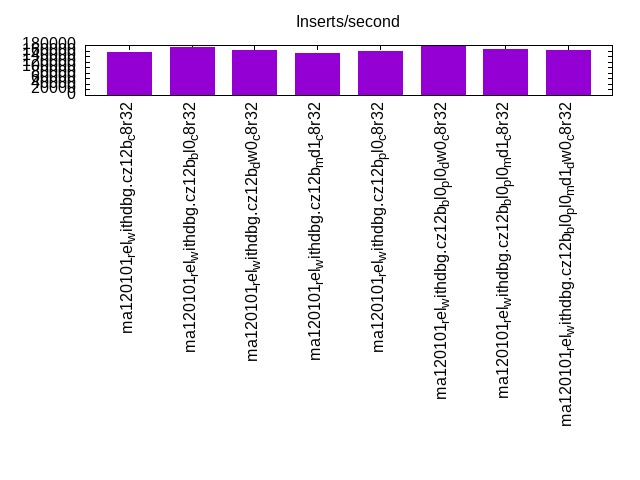
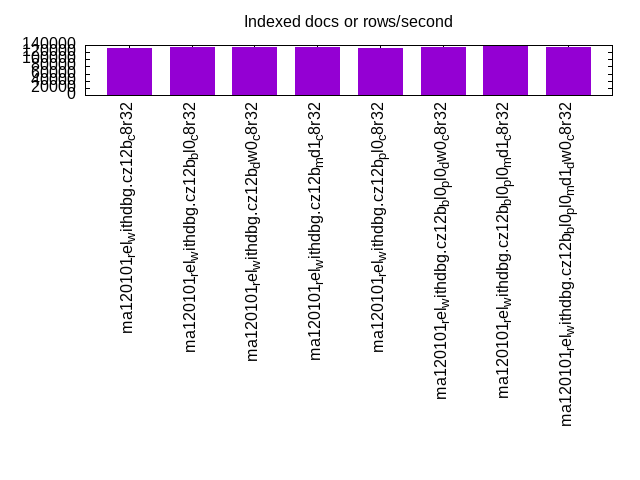
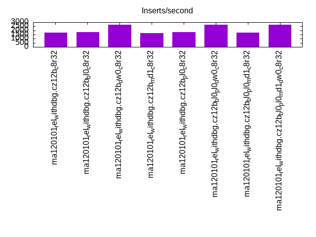
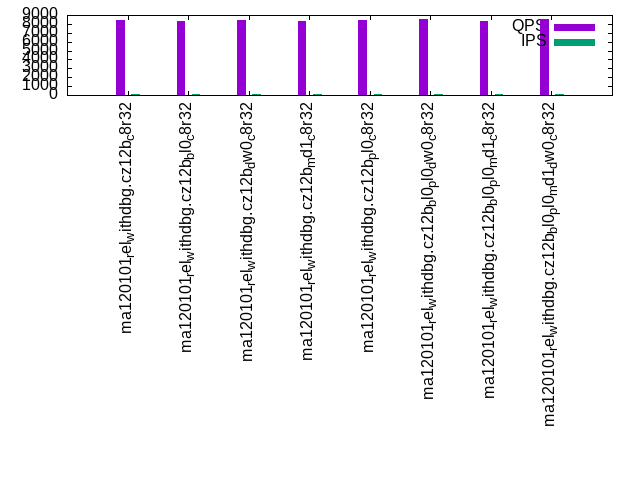
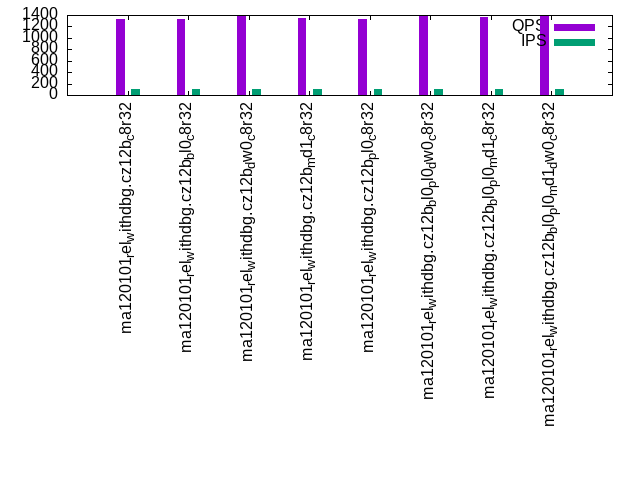
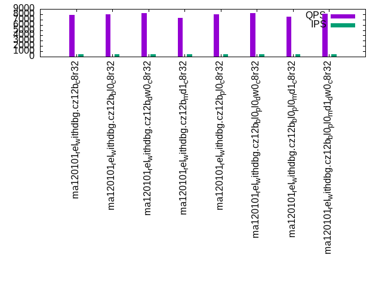
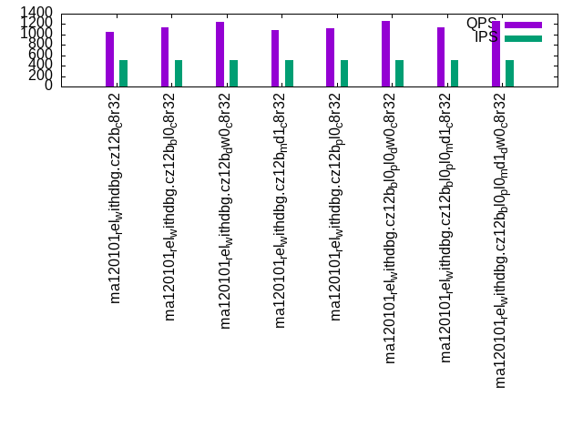
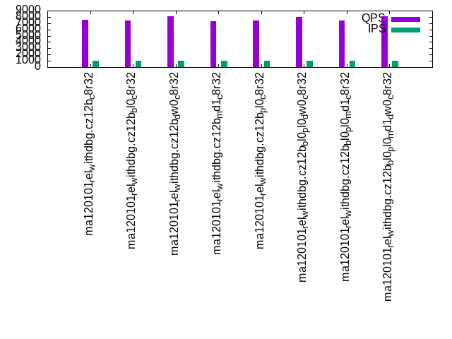
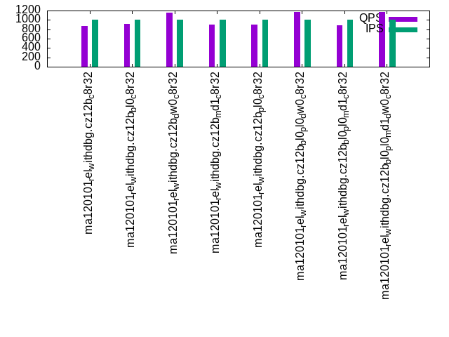

This is a report for the insert benchmark with 800M docs and 1 client(s). It is generated by scripts (bash, awk, sed) and Tufte might not be impressed. An overview of the insert benchmark is here and a short update is here. Below, by DBMS, I mean DBMS+version.config. An example is my8020.c10b40 where my means MySQL, 8020 is version 8.0.20 and c10b40 is the name for the configuration file.
The test server has 8 AMD cores, 32G RAM and an NVMe device for the database. The benchmark was run with 1 client and there were 1 or 3 connections per client (1 for queries or inserts without rate limits, 1+1 for rate limited inserts+deletes). It uses 1 table with a table per client. It loads 800M rows per table without secondary indexes, creates 3 secondary indexes per table, then inserts 4m+1m rows per table with a delete per insert to avoid growing the table. It then does 6 read+write tests for 1800s each that do queries as fast as possible with 100,100,500,500,1000,1000 inserts/s and the same for deletes/s per client concurrent with the queries. The database is larger than memory. Clients and the DBMS share one server.
The tested DBMS are:
The numbers are inserts/s for l.i0, l.i1 and l.i2, indexed docs (or rows) /s for l.x and queries/s for qr100, qp100 thru qr1000, qp1000" The values are the average rate over the entire test for inserts (IPS) and queries (QPS). The range of values for IPS and QPS is split into 3 parts: bottom 25%, middle 50%, top 25%. Values in the bottom 25% have a red background, values in the top 25% have a green background and values in the middle have no color. A gray background is used for values that can be ignored because the DBMS did not sustain the target insert rate. Red backgrounds are not used when the minimum value is within 80% of the max value.
| dbms | l.i0 | l.x | l.i1 | l.i2 | qr100 | qp100 | qr500 | qp500 | qr1000 | qp1000 |
|---|---|---|---|---|---|---|---|---|---|---|
| ma120101_rel_withdbg.cz12b_c8r32 | 156372 | 132057 | 1742 | 2070 | 8436 | 1338 | 7919 | 1056 | 7529 | 868 |
| ma120101_rel_withdbg.cz12b_bl0_c8r32 | 172525 | 133178 | 1800 | 2123 | 8379 | 1337 | 7959 | 1130 | 7479 | 918 |
| ma120101_rel_withdbg.cz12b_dw0_c8r32 | 160739 | 134048 | 2697 | 3289 | 8487 | 1378 | 8179 | 1251 | 8073 | 1160 |
| ma120101_rel_withdbg.cz12b_md1_c8r32 | 151486 | 134116 | 1654 | 1883 | 8280 | 1343 | 7348 | 1090 | 7311 | 896 |
| ma120101_rel_withdbg.cz12b_pl0_c8r32 | 158699 | 132934 | 1784 | 2079 | 8493 | 1338 | 7954 | 1114 | 7449 | 904 |
| ma120101_rel_withdbg.cz12b_bl0_pl0_dw0_c8r32 | 174863 | 135226 | 2710 | 3356 | 8545 | 1383 | 8216 | 1257 | 8019 | 1164 |
| ma120101_rel_withdbg.cz12b_bl0_pl0_md1_c8r32 | 165289 | 136402 | 1715 | 1942 | 8298 | 1362 | 7586 | 1143 | 7445 | 886 |
| ma120101_rel_withdbg.cz12b_bl0_pl0_md1_dw0_c8r32 | 162536 | 134093 | 2721 | 3289 | 8528 | 1383 | 8049 | 1257 | 8085 | 1166 |
This table has relative throughput, throughput for the DBMS relative to the DBMS in the first line, using the absolute throughput from the previous table. Values less than 0.95 have a yellow background. Values greater than 1.05 have a blue background.
| dbms | l.i0 | l.x | l.i1 | l.i2 | qr100 | qp100 | qr500 | qp500 | qr1000 | qp1000 |
|---|---|---|---|---|---|---|---|---|---|---|
| ma120101_rel_withdbg.cz12b_c8r32 | 1.00 | 1.00 | 1.00 | 1.00 | 1.00 | 1.00 | 1.00 | 1.00 | 1.00 | 1.00 |
| ma120101_rel_withdbg.cz12b_bl0_c8r32 | 1.10 | 1.01 | 1.03 | 1.03 | 0.99 | 1.00 | 1.01 | 1.07 | 0.99 | 1.06 |
| ma120101_rel_withdbg.cz12b_dw0_c8r32 | 1.03 | 1.02 | 1.55 | 1.59 | 1.01 | 1.03 | 1.03 | 1.18 | 1.07 | 1.34 |
| ma120101_rel_withdbg.cz12b_md1_c8r32 | 0.97 | 1.02 | 0.95 | 0.91 | 0.98 | 1.00 | 0.93 | 1.03 | 0.97 | 1.03 |
| ma120101_rel_withdbg.cz12b_pl0_c8r32 | 1.01 | 1.01 | 1.02 | 1.00 | 1.01 | 1.00 | 1.00 | 1.05 | 0.99 | 1.04 |
| ma120101_rel_withdbg.cz12b_bl0_pl0_dw0_c8r32 | 1.12 | 1.02 | 1.56 | 1.62 | 1.01 | 1.03 | 1.04 | 1.19 | 1.07 | 1.34 |
| ma120101_rel_withdbg.cz12b_bl0_pl0_md1_c8r32 | 1.06 | 1.03 | 0.98 | 0.94 | 0.98 | 1.02 | 0.96 | 1.08 | 0.99 | 1.02 |
| ma120101_rel_withdbg.cz12b_bl0_pl0_md1_dw0_c8r32 | 1.04 | 1.02 | 1.56 | 1.59 | 1.01 | 1.03 | 1.02 | 1.19 | 1.07 | 1.34 |
This lists the average rate of inserts/s for the tests that do inserts concurrent with queries. For such tests the query rate is listed in the table above. The read+write tests are setup so that the insert rate should match the target rate every second. Cells that are not at least 95% of the target have a red background to indicate a failure to satisfy the target.
| dbms | qr100.L1 | qp100.L2 | qr500.L3 | qp500.L4 | qr1000.L5 | qp1000.L6 |
|---|---|---|---|---|---|---|
| ma120101_rel_withdbg.cz12b_c8r32 | 100 | 100 | 500 | 499 | 999 | 999 |
| ma120101_rel_withdbg.cz12b_bl0_c8r32 | 100 | 100 | 499 | 500 | 999 | 999 |
| ma120101_rel_withdbg.cz12b_dw0_c8r32 | 100 | 100 | 500 | 500 | 999 | 1000 |
| ma120101_rel_withdbg.cz12b_md1_c8r32 | 100 | 100 | 500 | 500 | 999 | 999 |
| ma120101_rel_withdbg.cz12b_pl0_c8r32 | 100 | 100 | 500 | 500 | 999 | 998 |
| ma120101_rel_withdbg.cz12b_bl0_pl0_dw0_c8r32 | 100 | 100 | 500 | 500 | 999 | 999 |
| ma120101_rel_withdbg.cz12b_bl0_pl0_md1_c8r32 | 100 | 100 | 500 | 500 | 999 | 999 |
| ma120101_rel_withdbg.cz12b_bl0_pl0_md1_dw0_c8r32 | 100 | 100 | 500 | 500 | 1000 | 999 |
| target | 100 | 100 | 500 | 500 | 1000 | 1000 |
l.i0: load without secondary indexes. Graphs for performance per 1-second interval are here.
Average throughput:
Insert response time histogram: each cell has the percentage of responses that take <= the time in the header and max is the max response time in seconds. For the max column values in the top 25% of the range have a red background and in the bottom 25% of the range have a green background. The red background is not used when the min value is within 80% of the max value.
| dbms | 256us | 1ms | 4ms | 16ms | 64ms | 256ms | 1s | 4s | 16s | gt | max |
|---|---|---|---|---|---|---|---|---|---|---|---|
| ma120101_rel_withdbg.cz12b_c8r32 | 99.645 | 0.162 | 0.079 | 0.109 | 0.005 | 0.192 | |||||
| ma120101_rel_withdbg.cz12b_bl0_c8r32 | 99.666 | 0.146 | 0.054 | 0.133 | nonzero | 0.214 | |||||
| ma120101_rel_withdbg.cz12b_dw0_c8r32 | 99.673 | 0.144 | 0.123 | 0.056 | 0.004 | 0.135 | |||||
| ma120101_rel_withdbg.cz12b_md1_c8r32 | 99.486 | 0.223 | 0.125 | 0.151 | 0.014 | 0.201 | |||||
| ma120101_rel_withdbg.cz12b_pl0_c8r32 | 99.649 | 0.159 | 0.057 | 0.130 | 0.005 | 0.216 | |||||
| ma120101_rel_withdbg.cz12b_bl0_pl0_dw0_c8r32 | 99.688 | 0.131 | 0.061 | 0.120 | 0.052 | ||||||
| ma120101_rel_withdbg.cz12b_bl0_pl0_md1_c8r32 | 99.511 | 0.200 | 0.105 | 0.171 | 0.012 | 0.159 | |||||
| ma120101_rel_withdbg.cz12b_bl0_pl0_md1_dw0_c8r32 | 99.205 | 0.479 | 0.172 | 0.141 | 0.002 | nonzero | 0.300 |
Performance metrics for the DBMS listed above. Some are normalized by throughput, others are not. Legend for results is here.
ips qps rps rmbps wps wmbps rpq rkbpq wpi wkbpi csps cpups cspq cpupq dbgb1 dbgb2 rss maxop p50 p99 tag 156372 0 0 0.0 968.6 45.3 0.000 0.000 0.006 0.296 21434 21.9 0.137 11 52.6 83.4 23.4 0.192 157371 137079 ma120101_rel_withdbg.cz12b_c8r32 172525 0 0 0.0 908.0 31.1 0.000 0.000 0.005 0.184 23009 22.8 0.133 11 52.6 83.4 23.4 0.214 172673 161872 ma120101_rel_withdbg.cz12b_bl0_c8r32 160739 0 0 0.0 994.5 46.3 0.000 0.000 0.006 0.295 22230 22.3 0.138 11 52.6 83.4 23.4 0.135 161677 141882 ma120101_rel_withdbg.cz12b_dw0_c8r32 151486 0 0 0.0 1525.4 56.4 0.000 0.000 0.010 0.381 21867 21.3 0.144 11 52.6 83.4 23.4 0.201 151877 128672 ma120101_rel_withdbg.cz12b_md1_c8r32 158699 0 0 0.0 981.9 45.9 0.000 0.000 0.006 0.296 21668 22.1 0.137 11 52.6 83.4 23.4 0.216 159771 138972 ma120101_rel_withdbg.cz12b_pl0_c8r32 174863 0 0 0.0 918.6 31.2 0.000 0.000 0.005 0.183 23533 23.2 0.135 11 52.6 83.4 23.4 0.052 174775 170076 ma120101_rel_withdbg.cz12b_bl0_pl0_dw0_c8r32 165289 0 0 0.0 1535.2 44.0 0.000 0.000 0.009 0.273 23404 22.1 0.142 11 52.6 83.4 23.4 0.159 164775 149880 ma120101_rel_withdbg.cz12b_bl0_pl0_md1_c8r32 162536 0 0 0.0 1588.0 39.9 0.000 0.000 0.010 0.251 26946 22.0 0.166 11 52.6 83.4 23.4 0.300 169580 123284 ma120101_rel_withdbg.cz12b_bl0_pl0_md1_dw0_c8r32
Average values from iostat.
r/s rkB/s rrqm/s %rrqm r_await rareq-s w/s wkB/s wrqm/s %wrqm w_await wareq-s d/s dkB/s drqm/s %drqm d_await dareq-s f/s f_await aqu-sz %util 0.220 1.206 0.004 0.070 1.584 1.969 968.6 46339.5 24.83 3.208 1.481 52.63 0.368 35.93 0.000 0.000 0.444 45.21 15.38 1.326 1.160 7.465 ma120101_rel_withdbg.cz12b_c8r32 0.120 0.818 0.000 0.000 3.159 1.991 908.0 31800.8 20.41 2.691 1.510 40.52 0.008 0.102 0.000 0.000 0.150 0.209 15.70 1.522 1.185 7.559 ma120101_rel_withdbg.cz12b_bl0_c8r32 0.314 1.602 0.000 0.013 2.482 2.954 994.5 47411.0 24.94 3.115 1.481 51.57 0.600 115.3 0.000 0.000 0.361 176.7 15.18 0.987 1.183 7.066 ma120101_rel_withdbg.cz12b_dw0_c8r32 0.301 2.135 0.000 0.000 2.278 2.702 1525.4 57768.8 41.50 2.676 0.961 36.95 0.586 180.7 0.000 0.000 0.467 109.1 75.49 1.165 1.515 15.18 ma120101_rel_withdbg.cz12b_md1_c8r32 0.270 1.398 0.000 0.000 2.499 2.652 981.9 47021.4 25.14 3.222 1.558 52.33 0.879 52.37 0.000 0.000 0.451 25.76 15.17 1.492 1.217 7.833 ma120101_rel_withdbg.cz12b_pl0_c8r32 0.137 0.895 0.000 0.000 3.117 1.966 918.6 31986.1 20.36 2.530 1.463 38.70 0.006 0.025 0.000 0.000 0.216 0.127 15.79 1.410 1.231 7.445 ma120101_rel_withdbg.cz12b_bl0_pl0_dw0_c8r32 0.178 1.718 0.000 0.000 2.832 2.081 1535.2 45044.7 35.70 2.274 0.998 29.59 0.008 1.114 0.000 0.000 0.108 1.701 81.82 1.275 1.593 16.72 ma120101_rel_withdbg.cz12b_bl0_pl0_md1_c8r32 0.180 1.689 0.000 0.000 2.319 1.988 1588.0 40845.4 30.45 1.882 0.612 25.78 0.007 1.768 0.000 0.000 0.138 3.026 49.74 1.129 1.021 12.53 ma120101_rel_withdbg.cz12b_bl0_pl0_md1_dw0_c8r32
l.x: create secondary indexes.
Average throughput:
Performance metrics for the DBMS listed above. Some are normalized by throughput, others are not. Legend for results is here.
ips qps rps rmbps wps wmbps rpq rkbpq wpi wkbpi csps cpups cspq cpupq dbgb1 dbgb2 rss maxop p50 p99 tag 132057 0 1301 117.4 1695.3 147.6 0.010 0.910 0.013 1.145 4779 11.6 0.036 7 111.5 142.3 23.4 0.001 NA NA ma120101_rel_withdbg.cz12b_c8r32 133178 0 1424 133.1 1717.7 149.0 0.011 1.024 0.013 1.146 4760 11.7 0.036 7 111.5 142.3 23.4 0.001 NA NA ma120101_rel_withdbg.cz12b_bl0_c8r32 134048 0 1427 132.8 1719.8 149.8 0.011 1.014 0.013 1.145 4776 12.2 0.036 7 111.5 142.3 23.4 0.001 NA NA ma120101_rel_withdbg.cz12b_dw0_c8r32 134116 0 1428 132.9 1706.8 149.7 0.011 1.015 0.013 1.143 4684 11.9 0.035 7 111.5 142.3 23.4 0.001 NA NA ma120101_rel_withdbg.cz12b_md1_c8r32 132934 0 1415 131.6 1707.2 148.6 0.011 1.014 0.013 1.145 4693 11.7 0.035 7 111.5 142.3 23.4 0.001 NA NA ma120101_rel_withdbg.cz12b_pl0_c8r32 135226 0 1446 135.2 1743.7 151.3 0.011 1.024 0.013 1.145 4839 11.9 0.036 7 111.5 142.3 23.4 0.001 NA NA ma120101_rel_withdbg.cz12b_bl0_pl0_dw0_c8r32 136402 0 1461 136.4 1735.1 152.3 0.011 1.024 0.013 1.143 4811 12.0 0.035 7 111.5 142.3 23.4 0.001 NA NA ma120101_rel_withdbg.cz12b_bl0_pl0_md1_c8r32 134093 0 1413 131.1 1712.6 149.7 0.011 1.002 0.013 1.143 5179 12.0 0.039 7 111.5 142.3 23.1 0.002 NA NA ma120101_rel_withdbg.cz12b_bl0_pl0_md1_dw0_c8r32
Average values from iostat.
r/s rkB/s rrqm/s %rrqm r_await rareq-s w/s wkB/s wrqm/s %wrqm w_await wareq-s d/s dkB/s drqm/s %drqm d_await dareq-s f/s f_await aqu-sz %util 1300.7 120219 0.000 0.000 0.146 103.3 1695.3 151157 16.23 1.360 0.590 121.6 0.688 5420.6 0.000 0.000 0.002 20.09 5.978 2.466 1.055 18.42 ma120101_rel_withdbg.cz12b_c8r32 1424.0 136337 0.000 0.000 0.138 103.9 1717.7 152574 16.52 1.261 0.448 122.1 0.673 5465.1 0.000 0.000 0.005 20.57 6.040 2.557 1.051 19.66 ma120101_rel_withdbg.cz12b_bl0_c8r32 1426.7 135938 0.000 0.000 0.131 103.3 1719.8 153437 16.24 1.289 0.411 122.2 0.444 5518.9 0.000 0.000 0.002 21.80 5.752 1.926 0.959 18.41 ma120101_rel_withdbg.cz12b_dw0_c8r32 1428.5 136093 0.000 0.000 0.133 103.2 1706.8 153317 16.47 1.267 0.325 123.1 0.674 5510.4 0.000 0.000 0.002 16.70 6.020 2.071 0.832 18.60 ma120101_rel_withdbg.cz12b_md1_c8r32 1415.4 134790 0.000 0.000 0.147 103.5 1707.2 152181 16.38 1.305 0.546 122.2 0.684 5457.7 0.000 0.000 0.003 13.64 6.024 2.567 1.128 19.97 ma120101_rel_withdbg.cz12b_pl0_c8r32 1445.8 138417 0.000 0.000 0.122 103.5 1743.7 154898 16.25 1.267 0.284 122.0 0.362 6544.0 0.000 0.000 0.002 73.61 5.819 2.017 0.729 18.30 ma120101_rel_withdbg.cz12b_bl0_pl0_dw0_c8r32 1461.1 139685 0.000 0.000 0.116 103.2 1735.1 155918 16.86 1.235 0.296 123.2 0.690 5600.8 0.000 0.000 0.003 14.73 6.088 1.649 0.726 17.58 ma120101_rel_withdbg.cz12b_bl0_pl0_md1_c8r32 1413.0 134296 0.004 0.000 0.115 101.5 1712.6 153331 16.29 1.269 0.202 123.1 0.698 9897.8 0.000 0.000 0.003 40.35 5.730 1.526 0.509 16.49 ma120101_rel_withdbg.cz12b_bl0_pl0_md1_dw0_c8r32
l.i1: continue load after secondary indexes created with 50 inserts per transaction. Graphs for performance per 1-second interval are here.
Average throughput:
Insert response time histogram: each cell has the percentage of responses that take <= the time in the header and max is the max response time in seconds. For the max column values in the top 25% of the range have a red background and in the bottom 25% of the range have a green background. The red background is not used when the min value is within 80% of the max value.
| dbms | 256us | 1ms | 4ms | 16ms | 64ms | 256ms | 1s | 4s | 16s | gt | max |
|---|---|---|---|---|---|---|---|---|---|---|---|
| ma120101_rel_withdbg.cz12b_c8r32 | 45.837 | 44.599 | 9.560 | 0.003 | 0.001 | 4.040 | |||||
| ma120101_rel_withdbg.cz12b_bl0_c8r32 | 47.640 | 43.604 | 8.751 | 0.004 | 0.001 | 3.763 | |||||
| ma120101_rel_withdbg.cz12b_dw0_c8r32 | 58.909 | 40.830 | 0.259 | 0.001 | 0.001 | 3.443 | |||||
| ma120101_rel_withdbg.cz12b_md1_c8r32 | 44.985 | 43.416 | 11.554 | 0.044 | 0.001 | 3.701 | |||||
| ma120101_rel_withdbg.cz12b_pl0_c8r32 | 47.404 | 43.501 | 9.093 | 0.001 | 0.001 | 3.035 | |||||
| ma120101_rel_withdbg.cz12b_bl0_pl0_dw0_c8r32 | 58.930 | 40.841 | 0.228 | 0.001 | 3.255 | ||||||
| ma120101_rel_withdbg.cz12b_bl0_pl0_md1_c8r32 | 46.085 | 44.006 | 9.874 | 0.034 | 0.001 | 3.716 | |||||
| ma120101_rel_withdbg.cz12b_bl0_pl0_md1_dw0_c8r32 | 59.822 | 39.803 | 0.374 | 0.001 | 2.998 |
Delete response time histogram: each cell has the percentage of responses that take <= the time in the header and max is the max response time in seconds. For the max column values in the top 25% of the range have a red background and in the bottom 25% of the range have a green background. The red background is not used when the min value is within 80% of the max value.
| dbms | 256us | 1ms | 4ms | 16ms | 64ms | 256ms | 1s | 4s | 16s | gt | max |
|---|---|---|---|---|---|---|---|---|---|---|---|
| ma120101_rel_withdbg.cz12b_c8r32 | 68.586 | 31.246 | 0.166 | 0.001 | 3.999 | ||||||
| ma120101_rel_withdbg.cz12b_bl0_c8r32 | 69.776 | 30.139 | 0.084 | 0.001 | 3.726 | ||||||
| ma120101_rel_withdbg.cz12b_dw0_c8r32 | 85.399 | 14.599 | 0.001 | 0.001 | 3.407 | ||||||
| ma120101_rel_withdbg.cz12b_md1_c8r32 | 66.949 | 32.856 | 0.168 | 0.026 | 0.001 | 3.498 | |||||
| ma120101_rel_withdbg.cz12b_pl0_c8r32 | 69.739 | 30.162 | 0.097 | 0.001 | 3.001 | ||||||
| ma120101_rel_withdbg.cz12b_bl0_pl0_dw0_c8r32 | 85.844 | 14.155 | 0.001 | 3.240 | |||||||
| ma120101_rel_withdbg.cz12b_bl0_pl0_md1_c8r32 | 67.434 | 32.432 | 0.116 | 0.016 | 0.001 | 3.676 | |||||
| ma120101_rel_withdbg.cz12b_bl0_pl0_md1_dw0_c8r32 | 86.446 | 13.550 | 0.003 | 0.001 | 2.968 |
Performance metrics for the DBMS listed above. Some are normalized by throughput, others are not. Legend for results is here.
ips qps rps rmbps wps wmbps rpq rkbpq wpi wkbpi csps cpups cspq cpupq dbgb1 dbgb2 rss maxop p50 p99 tag 1742 0 8156 127.4 8881.3 238.5 4.682 74.905 5.098 140.181 66606 13.2 38.233 606 133.0 163.8 23.2 4.040 1700 700 ma120101_rel_withdbg.cz12b_c8r32 1800 0 8426 131.7 9126.2 244.8 4.681 74.898 5.070 139.233 68080 13.4 37.820 596 133.0 163.8 23.5 3.763 1800 700 ma120101_rel_withdbg.cz12b_bl0_c8r32 2697 0 12616 197.1 12456.3 218.4 4.677 74.839 4.618 82.913 101612 17.7 37.673 525 133.0 163.8 23.5 3.443 2750 1550 ma120101_rel_withdbg.cz12b_dw0_c8r32 1654 0 7733 120.8 9912.3 265.1 4.677 74.829 5.995 164.157 68774 13.0 41.593 629 133.0 163.8 23.5 3.701 1650 550 ma120101_rel_withdbg.cz12b_md1_c8r32 1784 0 8347 130.4 9059.3 243.2 4.679 74.857 5.078 139.560 67600 13.3 37.890 596 133.0 163.8 23.5 3.035 1750 700 ma120101_rel_withdbg.cz12b_pl0_c8r32 2710 0 12693 198.3 12498.8 218.8 4.684 74.940 4.612 82.669 101910 17.8 37.605 525 133.0 163.8 23.5 3.255 2750 1600 ma120101_rel_withdbg.cz12b_bl0_pl0_dw0_c8r32 1715 0 8024 125.4 10209.5 272.8 4.678 74.850 5.952 162.838 70744 13.3 41.245 620 133.0 163.8 23.5 3.716 1750 550 ma120101_rel_withdbg.cz12b_bl0_pl0_md1_c8r32 2721 0 12736 199.0 13728.4 238.0 4.681 74.889 5.045 89.582 108645 18.3 39.928 538 133.0 163.8 23.2 2.998 2750 1400 ma120101_rel_withdbg.cz12b_bl0_pl0_md1_dw0_c8r32
Average values from iostat.
r/s rkB/s rrqm/s %rrqm r_await rareq-s w/s wkB/s wrqm/s %wrqm w_await wareq-s d/s dkB/s drqm/s %drqm d_await dareq-s f/s f_await aqu-sz %util 8156.4 130493 0.000 0.000 0.162 16.00 8881.3 244209 59.03 0.942 0.341 28.62 0.005 0.021 0.000 0.000 0.027 0.096 119.6 3.018 4.738 83.79 ma120101_rel_withdbg.cz12b_c8r32 8426.5 134823 0.000 0.000 0.156 16.00 9126.2 250633 82.18 1.069 0.321 28.18 0.000 0.000 0.000 0.000 0.000 0.000 123.3 2.876 4.669 83.83 ma120101_rel_withdbg.cz12b_bl0_c8r32 12616.0 201856 0.000 0.000 0.089 16.00 12456.3 223634 38.59 0.685 0.116 19.07 0.011 0.043 0.000 0.000 0.037 0.162 27.31 2.524 2.319 76.26 ma120101_rel_withdbg.cz12b_dw0_c8r32 7733.1 123730 0.000 0.000 0.178 16.00 9912.3 271433 48.66 0.813 0.302 28.53 0.006 2.188 0.000 0.000 0.024 10.23 134.7 2.895 4.715 84.99 ma120101_rel_withdbg.cz12b_md1_c8r32 8347.0 133552 0.000 0.000 0.159 16.00 9059.3 248989 79.98 1.097 0.331 28.34 0.006 0.032 0.000 0.000 0.039 0.152 122.9 2.918 4.675 83.88 ma120101_rel_withdbg.cz12b_pl0_c8r32 12693.0 203086 0.000 0.000 0.088 16.00 12498.8 224033 36.17 0.699 0.109 19.27 0.001 0.100 0.000 0.000 0.003 0.251 28.15 2.450 2.273 76.23 ma120101_rel_withdbg.cz12b_bl0_pl0_dw0_c8r32 8023.9 128383 0.000 0.000 0.170 16.00 10209.5 279300 54.92 0.836 0.278 28.45 0.000 0.002 0.000 0.000 0.002 0.009 138.3 2.738 4.644 84.92 ma120101_rel_withdbg.cz12b_bl0_pl0_md1_c8r32 12735.8 203773 0.000 0.000 0.087 16.00 13728.4 243752 27.49 0.481 0.093 18.76 0.000 0.000 0.000 0.000 0.000 0.000 28.54 2.325 2.266 76.16 ma120101_rel_withdbg.cz12b_bl0_pl0_md1_dw0_c8r32
l.i2: continue load after secondary indexes created with 5 inserts per transaction. Graphs for performance per 1-second interval are here.
Average throughput:
Insert response time histogram: each cell has the percentage of responses that take <= the time in the header and max is the max response time in seconds. For the max column values in the top 25% of the range have a red background and in the bottom 25% of the range have a green background. The red background is not used when the min value is within 80% of the max value.
| dbms | 256us | 1ms | 4ms | 16ms | 64ms | 256ms | 1s | 4s | 16s | gt | max |
|---|---|---|---|---|---|---|---|---|---|---|---|
| ma120101_rel_withdbg.cz12b_c8r32 | 0.001 | 15.648 | 67.538 | 16.159 | 0.653 | 0.001 | 0.086 | ||||
| ma120101_rel_withdbg.cz12b_bl0_c8r32 | 0.001 | 17.108 | 66.414 | 15.931 | 0.546 | 0.050 | |||||
| ma120101_rel_withdbg.cz12b_dw0_c8r32 | 0.001 | 20.241 | 76.510 | 3.231 | 0.018 | 0.023 | |||||
| ma120101_rel_withdbg.cz12b_md1_c8r32 | 0.001 | 15.376 | 64.119 | 19.747 | 0.757 | 0.001 | 0.117 | ||||
| ma120101_rel_withdbg.cz12b_pl0_c8r32 | 0.001 | 16.255 | 66.856 | 16.276 | 0.612 | 0.049 | |||||
| ma120101_rel_withdbg.cz12b_bl0_pl0_dw0_c8r32 | 0.001 | 21.918 | 75.126 | 2.942 | 0.013 | 0.022 | |||||
| ma120101_rel_withdbg.cz12b_bl0_pl0_md1_c8r32 | 16.992 | 63.196 | 19.159 | 0.653 | 0.001 | 0.070 | |||||
| ma120101_rel_withdbg.cz12b_bl0_pl0_md1_dw0_c8r32 | 21.490 | 75.297 | 3.196 | 0.016 | 0.040 |
Delete response time histogram: each cell has the percentage of responses that take <= the time in the header and max is the max response time in seconds. For the max column values in the top 25% of the range have a red background and in the bottom 25% of the range have a green background. The red background is not used when the min value is within 80% of the max value.
| dbms | 256us | 1ms | 4ms | 16ms | 64ms | 256ms | 1s | 4s | 16s | gt | max |
|---|---|---|---|---|---|---|---|---|---|---|---|
| ma120101_rel_withdbg.cz12b_c8r32 | 0.005 | 47.870 | 41.302 | 10.446 | 0.377 | 0.001 | 0.069 | ||||
| ma120101_rel_withdbg.cz12b_bl0_c8r32 | 0.006 | 50.407 | 39.695 | 9.572 | 0.321 | 0.044 | |||||
| ma120101_rel_withdbg.cz12b_dw0_c8r32 | 0.005 | 55.365 | 42.779 | 1.847 | 0.004 | 0.023 | |||||
| ma120101_rel_withdbg.cz12b_md1_c8r32 | 0.001 | 44.885 | 42.035 | 12.668 | 0.411 | 0.001 | 0.116 | ||||
| ma120101_rel_withdbg.cz12b_pl0_c8r32 | 0.003 | 47.326 | 41.909 | 10.418 | 0.344 | 0.039 | |||||
| ma120101_rel_withdbg.cz12b_bl0_pl0_dw0_c8r32 | 0.009 | 58.532 | 39.838 | 1.616 | 0.005 | 0.020 | |||||
| ma120101_rel_withdbg.cz12b_bl0_pl0_md1_c8r32 | 0.006 | 48.422 | 39.864 | 11.380 | 0.329 | 0.064 | |||||
| ma120101_rel_withdbg.cz12b_bl0_pl0_md1_dw0_c8r32 | 0.003 | 57.998 | 40.340 | 1.650 | 0.009 | 0.001 | 0.069 |
Performance metrics for the DBMS listed above. Some are normalized by throughput, others are not. Legend for results is here.
ips qps rps rmbps wps wmbps rpq rkbpq wpi wkbpi csps cpups cspq cpupq dbgb1 dbgb2 rss maxop p50 p99 tag 2070 0 8737 136.5 9182.7 252.3 4.220 67.520 4.435 124.804 78244 15.3 37.793 591 133.0 163.8 23.2 0.086 2120 755 ma120101_rel_withdbg.cz12b_c8r32 2123 0 8986 140.4 9519.6 261.0 4.232 67.717 4.484 125.898 80166 15.4 37.759 580 133.0 163.8 23.5 0.050 2205 780 ma120101_rel_withdbg.cz12b_bl0_c8r32 3289 0 13895 217.1 13138.6 227.3 4.224 67.589 3.994 70.744 121455 21.5 36.923 523 133.0 163.8 23.5 0.023 3320 2515 ma120101_rel_withdbg.cz12b_dw0_c8r32 1883 0 7956 124.3 10166.0 277.9 4.224 67.592 5.398 151.118 78112 14.8 41.478 629 133.0 163.8 23.5 0.117 2045 685 ma120101_rel_withdbg.cz12b_md1_c8r32 2079 0 8785 137.3 9351.7 256.9 4.226 67.609 4.498 126.532 78802 15.4 37.904 593 133.0 163.8 23.5 0.049 2140 755 ma120101_rel_withdbg.cz12b_pl0_c8r32 3356 0 14183 221.6 12962.8 224.2 4.227 67.626 3.863 68.411 121774 21.4 36.289 510 133.0 163.8 23.5 0.022 3350 2435 ma120101_rel_withdbg.cz12b_bl0_pl0_dw0_c8r32 1942 0 8195 128.0 10694.0 291.5 4.220 67.527 5.508 153.751 81701 15.0 42.077 618 133.0 163.8 23.5 0.070 2050 705 ma120101_rel_withdbg.cz12b_bl0_pl0_md1_c8r32 3289 0 13973 218.3 13765.8 236.4 4.248 67.965 4.185 73.591 125660 21.7 38.202 528 133.0 163.8 23.2 0.040 3330 2335 ma120101_rel_withdbg.cz12b_bl0_pl0_md1_dw0_c8r32
Average values from iostat.
r/s rkB/s rrqm/s %rrqm r_await rareq-s w/s wkB/s wrqm/s %wrqm w_await wareq-s d/s dkB/s drqm/s %drqm d_await dareq-s f/s f_await aqu-sz %util 8736.7 139787 0.000 0.000 0.174 16.00 9182.7 258381 4.135 0.045 0.212 28.20 0.015 0.117 0.000 0.000 0.104 0.583 125.1 3.123 3.857 84.18 ma120101_rel_withdbg.cz12b_c8r32 8985.6 143769 0.000 0.000 0.169 16.00 9519.6 267294 31.27 0.326 0.201 28.13 0.000 0.000 0.000 0.000 0.000 0.000 129.7 2.990 3.813 84.42 ma120101_rel_withdbg.cz12b_bl0_c8r32 13895.4 222327 0.000 0.000 0.090 16.00 13138.6 232706 2.370 0.018 0.047 17.76 0.033 0.853 0.000 0.000 0.125 3.933 18.49 2.812 1.941 76.26 ma120101_rel_withdbg.cz12b_dw0_c8r32 7955.6 127289 0.000 0.000 0.202 16.00 10166.0 284586 5.034 0.047 0.196 28.08 0.017 2.083 0.000 0.000 0.113 8.698 141.5 3.073 3.987 85.72 ma120101_rel_withdbg.cz12b_md1_c8r32 8785.0 140559 0.000 0.000 0.174 16.00 9351.7 263060 31.21 0.331 0.209 28.19 0.019 0.125 0.000 0.000 0.062 0.458 127.6 3.076 3.858 84.19 ma120101_rel_withdbg.cz12b_pl0_c8r32 14183.2 226932 0.000 0.000 0.089 16.00 12962.8 229565 1.885 0.015 0.041 17.79 0.000 0.000 0.000 0.000 0.000 0.000 18.91 2.758 1.829 76.81 ma120101_rel_withdbg.cz12b_bl0_pl0_dw0_c8r32 8194.9 131118 0.000 0.000 0.197 16.00 10694.0 298538 2.563 0.023 0.185 28.00 0.000 0.000 0.000 0.000 0.000 0.000 148.1 2.902 3.973 85.95 ma120101_rel_withdbg.cz12b_bl0_pl0_md1_c8r32 13972.8 223565 0.000 0.000 0.090 16.00 13765.8 242071 1.490 0.012 0.037 17.68 0.000 0.000 0.000 0.000 0.000 0.000 19.70 2.613 1.794 77.19 ma120101_rel_withdbg.cz12b_bl0_pl0_md1_dw0_c8r32
qr100.L1: range queries with 100 insert/s per client. Graphs for performance per 1-second interval are here.
Average throughput:
Query response time histogram: each cell has the percentage of responses that take <= the time in the header and max is the max response time in seconds. For max values in the top 25% of the range have a red background and in the bottom 25% of the range have a green background. The red background is not used when the min value is within 80% of the max value.
| dbms | 256us | 1ms | 4ms | 16ms | 64ms | 256ms | 1s | 4s | 16s | gt | max |
|---|---|---|---|---|---|---|---|---|---|---|---|
| ma120101_rel_withdbg.cz12b_c8r32 | 99.591 | 0.377 | 0.017 | 0.015 | nonzero | 0.038 | |||||
| ma120101_rel_withdbg.cz12b_bl0_c8r32 | 99.587 | 0.382 | 0.016 | 0.015 | 0.014 | ||||||
| ma120101_rel_withdbg.cz12b_dw0_c8r32 | 99.751 | 0.221 | 0.014 | 0.014 | 0.014 | ||||||
| ma120101_rel_withdbg.cz12b_md1_c8r32 | 99.556 | 0.367 | 0.041 | 0.034 | 0.001 | 0.042 | |||||
| ma120101_rel_withdbg.cz12b_pl0_c8r32 | 99.620 | 0.348 | 0.017 | 0.015 | nonzero | 0.017 | |||||
| ma120101_rel_withdbg.cz12b_bl0_pl0_dw0_c8r32 | 99.752 | 0.220 | 0.014 | 0.014 | 0.015 | ||||||
| ma120101_rel_withdbg.cz12b_bl0_pl0_md1_c8r32 | 99.563 | 0.357 | 0.042 | 0.036 | 0.002 | 0.034 | |||||
| ma120101_rel_withdbg.cz12b_bl0_pl0_md1_dw0_c8r32 | 99.716 | 0.245 | 0.024 | 0.015 | nonzero | 0.038 |
Insert response time histogram: each cell has the percentage of responses that take <= the time in the header and max is the max response time in seconds. For max values in the top 25% of the range have a red background and in the bottom 25% of the range have a green background. The red background is not used when the min value is within 80% of the max value.
| dbms | 256us | 1ms | 4ms | 16ms | 64ms | 256ms | 1s | 4s | 16s | gt | max |
|---|---|---|---|---|---|---|---|---|---|---|---|
| ma120101_rel_withdbg.cz12b_c8r32 | 53.639 | 46.306 | 0.056 | 0.067 | |||||||
| ma120101_rel_withdbg.cz12b_bl0_c8r32 | 53.889 | 46.083 | 0.028 | 0.068 | |||||||
| ma120101_rel_withdbg.cz12b_dw0_c8r32 | 56.639 | 43.361 | 0.038 | ||||||||
| ma120101_rel_withdbg.cz12b_md1_c8r32 | 41.917 | 30.944 | 27.139 | 0.180 | |||||||
| ma120101_rel_withdbg.cz12b_pl0_c8r32 | 53.750 | 46.222 | 0.028 | 0.068 | |||||||
| ma120101_rel_withdbg.cz12b_bl0_pl0_dw0_c8r32 | 56.972 | 43.028 | 0.036 | ||||||||
| ma120101_rel_withdbg.cz12b_bl0_pl0_md1_c8r32 | 37.778 | 35.389 | 26.833 | 0.152 | |||||||
| ma120101_rel_withdbg.cz12b_bl0_pl0_md1_dw0_c8r32 | 31.528 | 68.444 | 0.028 | 0.066 |
Delete response time histogram: each cell has the percentage of responses that take <= the time in the header and max is the max response time in seconds. For max values in the top 25% of the range have a red background and in the bottom 25% of the range have a green background. The red background is not used when the min value is within 80% of the max value.
| dbms | 256us | 1ms | 4ms | 16ms | 64ms | 256ms | 1s | 4s | 16s | gt | max |
|---|---|---|---|---|---|---|---|---|---|---|---|
| ma120101_rel_withdbg.cz12b_c8r32 | 56.278 | 43.722 | 0.049 | ||||||||
| ma120101_rel_withdbg.cz12b_bl0_c8r32 | 56.528 | 43.472 | 0.042 | ||||||||
| ma120101_rel_withdbg.cz12b_dw0_c8r32 | 64.278 | 35.722 | 0.038 | ||||||||
| ma120101_rel_withdbg.cz12b_md1_c8r32 | 31.778 | 52.722 | 15.500 | 0.162 | |||||||
| ma120101_rel_withdbg.cz12b_pl0_c8r32 | 55.806 | 44.194 | 0.042 | ||||||||
| ma120101_rel_withdbg.cz12b_bl0_pl0_dw0_c8r32 | 65.444 | 34.556 | 0.032 | ||||||||
| ma120101_rel_withdbg.cz12b_bl0_pl0_md1_c8r32 | 33.500 | 54.667 | 11.833 | 0.122 | |||||||
| ma120101_rel_withdbg.cz12b_bl0_pl0_md1_dw0_c8r32 | 56.694 | 43.306 | 0.041 |
Performance metrics for the DBMS listed above. Some are normalized by throughput, others are not. Legend for results is here.
ips qps rps rmbps wps wmbps rpq rkbpq wpi wkbpi csps cpups cspq cpupq dbgb1 dbgb2 rss maxop p50 p99 tag 100 8436 458 7.2 109.2 3.4 0.054 0.869 1.093 35.084 50358 12.4 5.969 118 133.0 163.8 23.1 0.038 8479 7903 ma120101_rel_withdbg.cz12b_c8r32 100 8379 460 7.2 108.5 3.4 0.055 0.878 1.085 34.788 50005 12.4 5.968 118 133.0 163.8 23.4 0.014 8415 7838 ma120101_rel_withdbg.cz12b_bl0_c8r32 100 8487 459 7.2 97.4 2.1 0.054 0.866 0.975 21.729 50571 12.4 5.959 117 133.0 163.8 23.4 0.014 8527 7935 ma120101_rel_withdbg.cz12b_dw0_c8r32 100 8280 455 7.1 1047.2 28.2 0.055 0.879 10.472 288.661 52525 12.4 6.344 120 133.0 163.8 23.4 0.042 8319 7183 ma120101_rel_withdbg.cz12b_md1_c8r32 100 8493 459 7.2 108.2 3.4 0.054 0.864 1.083 34.812 50671 12.4 5.966 117 133.0 163.8 23.4 0.017 8542 7935 ma120101_rel_withdbg.cz12b_pl0_c8r32 100 8545 459 7.2 95.9 2.1 0.054 0.860 0.959 21.253 50862 12.4 5.952 116 133.0 163.8 23.4 0.015 8575 7903 ma120101_rel_withdbg.cz12b_bl0_pl0_dw0_c8r32 100 8298 454 7.1 1086.8 29.2 0.055 0.875 10.879 298.879 52750 12.4 6.357 120 133.0 163.8 23.4 0.034 8334 7263 ma120101_rel_withdbg.cz12b_bl0_pl0_md1_c8r32 100 8528 455 7.1 988.0 15.8 0.053 0.853 9.890 161.767 54487 12.4 6.389 116 133.0 163.8 23.1 0.038 8575 7855 ma120101_rel_withdbg.cz12b_bl0_pl0_md1_dw0_c8r32
Average values from iostat.
r/s rkB/s rrqm/s %rrqm r_await rareq-s w/s wkB/s wrqm/s %wrqm w_await wareq-s d/s dkB/s drqm/s %drqm d_await dareq-s f/s f_await aqu-sz %util 458.3 7332.2 0.000 0.000 0.151 16.00 109.2 3504.9 0.709 3.094 1.631 51.81 0.009 0.073 0.000 0.000 0.039 0.367 3.496 1.755 0.112 6.296 ma120101_rel_withdbg.cz12b_c8r32 459.8 7356.6 0.000 0.000 0.150 16.00 108.5 3478.8 0.777 2.342 1.612 51.83 0.001 0.002 0.000 0.000 0.003 0.011 3.476 1.621 0.109 6.056 ma120101_rel_withdbg.cz12b_bl0_c8r32 459.2 7346.9 0.000 0.000 0.141 16.00 97.40 2170.8 0.688 3.063 1.527 46.33 0.009 0.118 0.000 0.000 0.031 0.589 1.887 1.677 0.101 4.929 ma120101_rel_withdbg.cz12b_dw0_c8r32 454.8 7276.5 0.000 0.000 0.214 16.00 1047.2 28866.1 0.947 0.110 0.238 27.61 0.011 0.044 0.000 0.000 0.044 0.211 25.79 1.632 0.382 9.426 ma120101_rel_withdbg.cz12b_md1_c8r32 458.8 7341.5 0.000 0.000 0.153 16.00 108.2 3477.7 0.987 3.078 1.681 52.37 0.010 0.396 0.000 0.000 0.033 1.978 3.614 1.924 0.114 6.248 ma120101_rel_withdbg.cz12b_pl0_c8r32 459.0 7344.6 0.000 0.000 0.140 16.00 95.90 2125.3 0.507 2.476 1.626 47.63 0.001 0.002 0.000 0.000 0.003 0.011 1.881 1.686 0.102 5.133 ma120101_rel_withdbg.cz12b_bl0_pl0_dw0_c8r32 453.7 7258.5 0.000 0.000 0.220 16.00 1086.8 29858.0 0.833 0.092 0.193 27.57 0.002 0.007 0.000 0.000 0.008 0.033 29.17 1.412 0.343 10.08 ma120101_rel_withdbg.cz12b_bl0_pl0_md1_c8r32 454.8 7276.1 0.000 0.000 0.165 16.00 988.0 16160.5 0.872 0.091 0.058 16.37 0.001 0.002 0.000 0.000 0.000 0.011 13.50 1.177 0.144 7.008 ma120101_rel_withdbg.cz12b_bl0_pl0_md1_dw0_c8r32
qp100.L2: point queries with 100 insert/s per client. Graphs for performance per 1-second interval are here.
Average throughput:
Query response time histogram: each cell has the percentage of responses that take <= the time in the header and max is the max response time in seconds. For max values in the top 25% of the range have a red background and in the bottom 25% of the range have a green background. The red background is not used when the min value is within 80% of the max value.
| dbms | 256us | 1ms | 4ms | 16ms | 64ms | 256ms | 1s | 4s | 16s | gt | max |
|---|---|---|---|---|---|---|---|---|---|---|---|
| ma120101_rel_withdbg.cz12b_c8r32 | 0.094 | 95.431 | 4.317 | 0.157 | nonzero | 0.017 | |||||
| ma120101_rel_withdbg.cz12b_bl0_c8r32 | 0.092 | 95.441 | 4.309 | 0.158 | nonzero | 0.021 | |||||
| ma120101_rel_withdbg.cz12b_dw0_c8r32 | 0.098 | 96.480 | 3.403 | 0.019 | nonzero | 0.017 | |||||
| ma120101_rel_withdbg.cz12b_md1_c8r32 | 0.092 | 95.323 | 4.471 | 0.113 | nonzero | 0.023 | |||||
| ma120101_rel_withdbg.cz12b_pl0_c8r32 | 0.092 | 95.349 | 4.412 | 0.148 | nonzero | 0.021 | |||||
| ma120101_rel_withdbg.cz12b_bl0_pl0_dw0_c8r32 | 0.102 | 96.645 | 3.234 | 0.020 | nonzero | 0.016 | |||||
| ma120101_rel_withdbg.cz12b_bl0_pl0_md1_c8r32 | 0.099 | 96.128 | 3.685 | 0.088 | nonzero | 0.016 | |||||
| ma120101_rel_withdbg.cz12b_bl0_pl0_md1_dw0_c8r32 | 0.100 | 96.646 | 3.235 | 0.019 | nonzero | 0.017 |
Insert response time histogram: each cell has the percentage of responses that take <= the time in the header and max is the max response time in seconds. For max values in the top 25% of the range have a red background and in the bottom 25% of the range have a green background. The red background is not used when the min value is within 80% of the max value.
| dbms | 256us | 1ms | 4ms | 16ms | 64ms | 256ms | 1s | 4s | 16s | gt | max |
|---|---|---|---|---|---|---|---|---|---|---|---|
| ma120101_rel_withdbg.cz12b_c8r32 | 77.000 | 23.000 | 0.052 | ||||||||
| ma120101_rel_withdbg.cz12b_bl0_c8r32 | 78.778 | 21.222 | 0.055 | ||||||||
| ma120101_rel_withdbg.cz12b_dw0_c8r32 | 94.000 | 6.000 | 0.035 | ||||||||
| ma120101_rel_withdbg.cz12b_md1_c8r32 | 80.139 | 19.750 | 0.111 | 0.082 | |||||||
| ma120101_rel_withdbg.cz12b_pl0_c8r32 | 79.028 | 20.972 | 0.058 | ||||||||
| ma120101_rel_withdbg.cz12b_bl0_pl0_dw0_c8r32 | 93.611 | 6.389 | 0.024 | ||||||||
| ma120101_rel_withdbg.cz12b_bl0_pl0_md1_c8r32 | 82.222 | 17.750 | 0.028 | 0.101 | |||||||
| ma120101_rel_withdbg.cz12b_bl0_pl0_md1_dw0_c8r32 | 93.833 | 6.167 | 0.033 |
Delete response time histogram: each cell has the percentage of responses that take <= the time in the header and max is the max response time in seconds. For max values in the top 25% of the range have a red background and in the bottom 25% of the range have a green background. The red background is not used when the min value is within 80% of the max value.
| dbms | 256us | 1ms | 4ms | 16ms | 64ms | 256ms | 1s | 4s | 16s | gt | max |
|---|---|---|---|---|---|---|---|---|---|---|---|
| ma120101_rel_withdbg.cz12b_c8r32 | 92.361 | 7.639 | 0.037 | ||||||||
| ma120101_rel_withdbg.cz12b_bl0_c8r32 | 94.528 | 5.472 | 0.036 | ||||||||
| ma120101_rel_withdbg.cz12b_dw0_c8r32 | 99.528 | 0.472 | 0.031 | ||||||||
| ma120101_rel_withdbg.cz12b_md1_c8r32 | 94.417 | 5.528 | 0.056 | 0.065 | |||||||
| ma120101_rel_withdbg.cz12b_pl0_c8r32 | 93.389 | 6.611 | 0.037 | ||||||||
| ma120101_rel_withdbg.cz12b_bl0_pl0_dw0_c8r32 | 99.667 | 0.333 | 0.018 | ||||||||
| ma120101_rel_withdbg.cz12b_bl0_pl0_md1_c8r32 | 92.694 | 7.306 | 0.048 | ||||||||
| ma120101_rel_withdbg.cz12b_bl0_pl0_md1_dw0_c8r32 | 99.583 | 0.417 | 0.021 |
Performance metrics for the DBMS listed above. Some are normalized by throughput, others are not. Legend for results is here.
ips qps rps rmbps wps wmbps rpq rkbpq wpi wkbpi csps cpups cspq cpupq dbgb1 dbgb2 rss maxop p50 p99 tag 100 1338 9275 144.9 990.3 26.5 6.929 110.846 9.913 271.464 29876 4.3 22.320 257 133.0 163.8 23.2 0.017 1408 880 ma120101_rel_withdbg.cz12b_c8r32 100 1337 9268 144.8 993.0 26.5 6.933 110.928 9.949 272.249 29809 4.2 22.299 251 133.0 163.8 23.5 0.021 1408 880 ma120101_rel_withdbg.cz12b_bl0_c8r32 100 1378 9504 148.5 878.6 14.3 6.897 110.346 8.786 145.975 30682 4.1 22.265 238 133.0 163.8 23.4 0.017 1456 992 ma120101_rel_withdbg.cz12b_dw0_c8r32 100 1343 9308 145.4 584.3 15.8 6.930 110.879 5.849 161.727 28583 4.0 21.280 238 133.0 163.8 23.5 0.023 1408 976 ma120101_rel_withdbg.cz12b_md1_c8r32 100 1338 9265 144.8 992.7 26.5 6.926 110.815 9.927 271.818 29806 4.2 22.282 251 133.0 163.8 23.5 0.021 1408 864 ma120101_rel_withdbg.cz12b_pl0_c8r32 100 1383 9528 148.9 877.1 14.2 6.889 110.229 8.771 145.541 30819 4.1 22.284 237 133.0 163.8 23.4 0.016 1456 992 ma120101_rel_withdbg.cz12b_bl0_pl0_dw0_c8r32 100 1362 9414 147.1 584.1 15.8 6.910 110.553 5.841 161.402 28894 4.0 21.208 235 133.0 163.8 23.4 0.016 1424 992 ma120101_rel_withdbg.cz12b_bl0_pl0_md1_c8r32 100 1383 9536 149.0 527.6 8.8 6.895 110.315 5.282 89.772 29414 3.9 21.267 226 133.0 163.8 23.2 0.017 1456 992 ma120101_rel_withdbg.cz12b_bl0_pl0_md1_dw0_c8r32
Average values from iostat.
r/s rkB/s rrqm/s %rrqm r_await rareq-s w/s wkB/s wrqm/s %wrqm w_await wareq-s d/s dkB/s drqm/s %drqm d_await dareq-s f/s f_await aqu-sz %util 9274.9 148367 0.000 0.000 0.080 16.00 990.3 27119.2 1.206 0.161 0.082 27.58 0.009 0.073 0.000 0.000 0.042 0.367 21.58 1.462 0.826 69.48 ma120101_rel_withdbg.cz12b_c8r32 9268.0 148288 0.000 0.000 0.080 16.00 993.0 27170.5 3.048 0.308 0.083 27.54 0.001 0.002 0.000 0.000 0.003 0.011 22.01 1.424 0.825 69.55 ma120101_rel_withdbg.cz12b_bl0_c8r32 9503.6 152057 0.000 0.000 0.070 16.00 878.6 14597.5 0.811 0.136 0.043 16.93 0.009 0.038 0.000 0.000 0.056 0.189 5.326 1.466 0.747 68.50 ma120101_rel_withdbg.cz12b_dw0_c8r32 9308.3 148932 0.000 0.000 0.080 16.00 584.3 16156.5 0.787 0.267 0.098 28.25 0.011 0.042 0.000 0.000 0.042 0.211 16.66 1.428 0.785 69.14 ma120101_rel_withdbg.cz12b_md1_c8r32 9264.8 148237 0.000 0.000 0.080 16.00 992.7 27181.8 3.270 0.342 0.079 27.57 0.009 0.393 0.000 0.000 0.039 1.967 21.76 1.410 0.822 69.60 ma120101_rel_withdbg.cz12b_pl0_c8r32 9527.9 152447 0.000 0.000 0.070 16.00 877.1 14554.1 0.607 0.100 0.051 16.89 0.001 0.002 0.000 0.000 0.003 0.011 5.478 1.430 0.752 68.51 ma120101_rel_withdbg.cz12b_bl0_pl0_dw0_c8r32 9413.6 150617 0.000 0.000 0.079 16.00 584.1 16140.2 0.641 0.199 0.090 28.14 0.001 0.002 0.000 0.000 0.000 0.011 16.43 1.324 0.786 69.31 ma120101_rel_withdbg.cz12b_bl0_pl0_md1_c8r32 9536.1 152577 0.000 0.000 0.070 16.00 527.6 8968.2 0.636 0.274 0.063 18.15 0.001 0.002 0.000 0.000 0.003 0.011 5.356 1.313 0.735 68.61 ma120101_rel_withdbg.cz12b_bl0_pl0_md1_dw0_c8r32
qr500.L3: range queries with 500 insert/s per client. Graphs for performance per 1-second interval are here.
Average throughput:
Query response time histogram: each cell has the percentage of responses that take <= the time in the header and max is the max response time in seconds. For max values in the top 25% of the range have a red background and in the bottom 25% of the range have a green background. The red background is not used when the min value is within 80% of the max value.
| dbms | 256us | 1ms | 4ms | 16ms | 64ms | 256ms | 1s | 4s | 16s | gt | max |
|---|---|---|---|---|---|---|---|---|---|---|---|
| ma120101_rel_withdbg.cz12b_c8r32 | 98.876 | 0.942 | 0.153 | 0.029 | nonzero | 0.036 | |||||
| ma120101_rel_withdbg.cz12b_bl0_c8r32 | 99.006 | 0.822 | 0.143 | 0.030 | nonzero | 0.036 | |||||
| ma120101_rel_withdbg.cz12b_dw0_c8r32 | 99.399 | 0.537 | 0.038 | 0.025 | nonzero | 0.019 | |||||
| ma120101_rel_withdbg.cz12b_md1_c8r32 | 98.491 | 1.107 | 0.301 | 0.098 | 0.004 | 0.054 | |||||
| ma120101_rel_withdbg.cz12b_pl0_c8r32 | 99.019 | 0.807 | 0.144 | 0.030 | nonzero | 0.027 | |||||
| ma120101_rel_withdbg.cz12b_bl0_pl0_dw0_c8r32 | 99.387 | 0.550 | 0.037 | 0.026 | 0.013 | ||||||
| ma120101_rel_withdbg.cz12b_bl0_pl0_md1_c8r32 | 98.759 | 0.949 | 0.201 | 0.088 | 0.003 | 0.045 | |||||
| ma120101_rel_withdbg.cz12b_bl0_pl0_md1_dw0_c8r32 | 99.149 | 0.680 | 0.144 | 0.026 | 0.015 |
Insert response time histogram: each cell has the percentage of responses that take <= the time in the header and max is the max response time in seconds. For max values in the top 25% of the range have a red background and in the bottom 25% of the range have a green background. The red background is not used when the min value is within 80% of the max value.
| dbms | 256us | 1ms | 4ms | 16ms | 64ms | 256ms | 1s | 4s | 16s | gt | max |
|---|---|---|---|---|---|---|---|---|---|---|---|
| ma120101_rel_withdbg.cz12b_c8r32 | 77.289 | 22.556 | 0.156 | 0.084 | |||||||
| ma120101_rel_withdbg.cz12b_bl0_c8r32 | 77.039 | 22.833 | 0.128 | 0.093 | |||||||
| ma120101_rel_withdbg.cz12b_dw0_c8r32 | 86.689 | 13.311 | 0.047 | ||||||||
| ma120101_rel_withdbg.cz12b_md1_c8r32 | 57.267 | 28.383 | 14.350 | 0.186 | |||||||
| ma120101_rel_withdbg.cz12b_pl0_c8r32 | 77.989 | 21.900 | 0.111 | 0.146 | |||||||
| ma120101_rel_withdbg.cz12b_bl0_pl0_dw0_c8r32 | 87.078 | 12.922 | 0.050 | ||||||||
| ma120101_rel_withdbg.cz12b_bl0_pl0_md1_c8r32 | 56.661 | 31.244 | 12.094 | 0.198 | |||||||
| ma120101_rel_withdbg.cz12b_bl0_pl0_md1_dw0_c8r32 | 48.472 | 51.322 | 0.206 | 0.094 |
Delete response time histogram: each cell has the percentage of responses that take <= the time in the header and max is the max response time in seconds. For max values in the top 25% of the range have a red background and in the bottom 25% of the range have a green background. The red background is not used when the min value is within 80% of the max value.
| dbms | 256us | 1ms | 4ms | 16ms | 64ms | 256ms | 1s | 4s | 16s | gt | max |
|---|---|---|---|---|---|---|---|---|---|---|---|
| ma120101_rel_withdbg.cz12b_c8r32 | 82.500 | 17.500 | 0.060 | ||||||||
| ma120101_rel_withdbg.cz12b_bl0_c8r32 | 83.678 | 16.322 | 0.055 | ||||||||
| ma120101_rel_withdbg.cz12b_dw0_c8r32 | 93.094 | 6.906 | 0.041 | ||||||||
| ma120101_rel_withdbg.cz12b_md1_c8r32 | 63.739 | 33.211 | 3.050 | 0.173 | |||||||
| ma120101_rel_withdbg.cz12b_pl0_c8r32 | 83.822 | 16.161 | 0.017 | 0.098 | |||||||
| ma120101_rel_withdbg.cz12b_bl0_pl0_dw0_c8r32 | 93.167 | 6.833 | 0.046 | ||||||||
| ma120101_rel_withdbg.cz12b_bl0_pl0_md1_c8r32 | 69.700 | 28.556 | 1.744 | 0.131 | |||||||
| ma120101_rel_withdbg.cz12b_bl0_pl0_md1_dw0_c8r32 | 81.394 | 18.583 | 0.022 | 0.080 |
Performance metrics for the DBMS listed above. Some are normalized by throughput, others are not. Legend for results is here.
ips qps rps rmbps wps wmbps rpq rkbpq wpi wkbpi csps cpups cspq cpupq dbgb1 dbgb2 rss maxop p50 p99 tag 500 7919 2447 38.2 1855.9 51.5 0.309 4.943 3.714 105.491 61518 14.2 7.769 143 133.0 163.8 23.2 0.036 8031 6367 ma120101_rel_withdbg.cz12b_c8r32 499 7959 2439 38.1 1853.1 51.3 0.306 4.902 3.711 105.262 61135 14.2 7.681 143 133.0 163.8 23.5 0.036 8063 5951 ma120101_rel_withdbg.cz12b_bl0_c8r32 500 8179 2445 38.2 1650.9 28.6 0.299 4.783 3.302 58.557 61869 14.0 7.565 137 133.0 163.9 23.4 0.019 8223 6975 ma120101_rel_withdbg.cz12b_dw0_c8r32 500 7348 2409 37.6 4820.9 130.0 0.328 5.244 9.648 266.305 69013 14.4 9.392 157 133.0 163.8 23.5 0.054 7487 4639 ma120101_rel_withdbg.cz12b_md1_c8r32 500 7954 2444 38.2 1859.6 51.6 0.307 4.917 3.721 105.685 61205 14.1 7.695 142 133.0 163.8 23.5 0.027 8062 6511 ma120101_rel_withdbg.cz12b_pl0_c8r32 500 8216 2441 38.1 1648.8 28.5 0.297 4.753 3.298 58.310 62056 14.1 7.553 137 133.0 163.9 23.5 0.013 8255 6991 ma120101_rel_withdbg.cz12b_bl0_pl0_dw0_c8r32 500 7586 2420 37.8 5041.2 135.8 0.319 5.104 10.082 278.081 70578 14.7 9.303 155 133.0 163.8 23.5 0.045 7695 5263 ma120101_rel_withdbg.cz12b_bl0_pl0_md1_c8r32 500 8049 2418 37.8 4083.1 65.7 0.300 4.806 8.171 134.579 71593 14.4 8.894 143 133.0 163.8 23.2 0.015 8127 6351 ma120101_rel_withdbg.cz12b_bl0_pl0_md1_dw0_c8r32
Average values from iostat.
r/s rkB/s rrqm/s %rrqm r_await rareq-s w/s wkB/s wrqm/s %wrqm w_await wareq-s d/s dkB/s drqm/s %drqm d_await dareq-s f/s f_await aqu-sz %util 2446.6 39145.0 0.000 0.000 0.111 16.00 1855.9 52713.7 0.927 0.073 0.126 29.14 0.004 0.022 0.000 0.000 0.022 0.111 33.76 1.453 0.552 20.27 ma120101_rel_withdbg.cz12b_c8r32 2438.7 39019.4 0.000 0.000 0.104 16.00 1853.1 52567.7 6.361 0.347 0.122 29.10 0.002 0.009 0.000 0.000 0.017 0.044 33.87 1.431 0.524 19.65 ma120101_rel_withdbg.cz12b_bl0_c8r32 2444.8 39116.4 0.000 0.000 0.080 16.00 1650.9 29278.6 0.945 0.078 0.079 18.59 0.002 0.056 0.000 0.000 0.008 0.278 9.328 1.305 0.329 15.01 ma120101_rel_withdbg.cz12b_dw0_c8r32 2408.6 38538.3 0.000 0.000 0.153 16.00 4820.9 133073 0.984 0.159 0.188 32.01 0.003 0.013 0.000 0.000 0.014 0.067 115.8 1.384 1.108 32.29 ma120101_rel_withdbg.cz12b_md1_c8r32 2444.5 39112.6 0.000 0.000 0.104 16.00 1859.6 52810.5 6.580 0.365 0.123 29.14 0.004 0.084 0.000 0.000 0.017 0.422 33.81 1.401 0.530 19.26 ma120101_rel_withdbg.cz12b_pl0_c8r32 2440.8 39052.9 0.000 0.000 0.081 16.00 1648.8 29155.0 0.779 0.063 0.077 18.53 0.001 0.004 0.000 0.000 0.003 0.022 10.32 1.247 0.324 15.14 ma120101_rel_withdbg.cz12b_bl0_pl0_dw0_c8r32 2420.2 38723.3 0.000 0.000 0.131 16.00 5041.2 139040 1.088 0.089 0.155 30.87 0.003 0.011 0.000 0.000 0.006 0.056 122.7 1.224 1.016 31.59 ma120101_rel_withdbg.cz12b_bl0_pl0_md1_c8r32 2418.0 38687.9 0.000 0.000 0.120 16.00 4083.1 67249.0 1.001 0.060 0.061 18.49 0.001 0.002 0.000 0.000 0.000 0.011 51.14 1.148 0.538 20.70 ma120101_rel_withdbg.cz12b_bl0_pl0_md1_dw0_c8r32
qp500.L4: point queries with 500 insert/s per client. Graphs for performance per 1-second interval are here.
Average throughput:
Query response time histogram: each cell has the percentage of responses that take <= the time in the header and max is the max response time in seconds. For max values in the top 25% of the range have a red background and in the bottom 25% of the range have a green background. The red background is not used when the min value is within 80% of the max value.
| dbms | 256us | 1ms | 4ms | 16ms | 64ms | 256ms | 1s | 4s | 16s | gt | max |
|---|---|---|---|---|---|---|---|---|---|---|---|
| ma120101_rel_withdbg.cz12b_c8r32 | 0.006 | 88.799 | 9.166 | 2.027 | 0.002 | nonzero | 0.203 | ||||
| ma120101_rel_withdbg.cz12b_bl0_c8r32 | 0.009 | 90.149 | 9.012 | 0.828 | 0.001 | 0.022 | |||||
| ma120101_rel_withdbg.cz12b_dw0_c8r32 | 0.011 | 93.647 | 6.308 | 0.035 | nonzero | 0.016 | |||||
| ma120101_rel_withdbg.cz12b_md1_c8r32 | 0.006 | 89.744 | 8.699 | 1.549 | 0.002 | nonzero | 0.138 | ||||
| ma120101_rel_withdbg.cz12b_pl0_c8r32 | 0.009 | 89.595 | 9.358 | 1.037 | 0.001 | 0.024 | |||||
| ma120101_rel_withdbg.cz12b_bl0_pl0_dw0_c8r32 | 0.011 | 93.973 | 5.986 | 0.030 | 0.014 | ||||||
| ma120101_rel_withdbg.cz12b_bl0_pl0_md1_c8r32 | 0.008 | 91.092 | 8.033 | 0.865 | 0.001 | 0.038 | |||||
| ma120101_rel_withdbg.cz12b_bl0_pl0_md1_dw0_c8r32 | 0.011 | 94.041 | 5.915 | 0.032 | nonzero | 0.037 |
Insert response time histogram: each cell has the percentage of responses that take <= the time in the header and max is the max response time in seconds. For max values in the top 25% of the range have a red background and in the bottom 25% of the range have a green background. The red background is not used when the min value is within 80% of the max value.
| dbms | 256us | 1ms | 4ms | 16ms | 64ms | 256ms | 1s | 4s | 16s | gt | max |
|---|---|---|---|---|---|---|---|---|---|---|---|
| ma120101_rel_withdbg.cz12b_c8r32 | 78.989 | 20.067 | 0.944 | 0.152 | |||||||
| ma120101_rel_withdbg.cz12b_bl0_c8r32 | 82.844 | 16.817 | 0.339 | 0.115 | |||||||
| ma120101_rel_withdbg.cz12b_dw0_c8r32 | 97.761 | 2.239 | 0.056 | ||||||||
| ma120101_rel_withdbg.cz12b_md1_c8r32 | 80.383 | 18.417 | 1.200 | 0.201 | |||||||
| ma120101_rel_withdbg.cz12b_pl0_c8r32 | 80.311 | 18.989 | 0.700 | 0.139 | |||||||
| ma120101_rel_withdbg.cz12b_bl0_pl0_dw0_c8r32 | 98.633 | 1.367 | 0.026 | ||||||||
| ma120101_rel_withdbg.cz12b_bl0_pl0_md1_c8r32 | 84.522 | 14.967 | 0.511 | 0.243 | |||||||
| ma120101_rel_withdbg.cz12b_bl0_pl0_md1_dw0_c8r32 | 98.411 | 1.589 | 0.060 |
Delete response time histogram: each cell has the percentage of responses that take <= the time in the header and max is the max response time in seconds. For max values in the top 25% of the range have a red background and in the bottom 25% of the range have a green background. The red background is not used when the min value is within 80% of the max value.
| dbms | 256us | 1ms | 4ms | 16ms | 64ms | 256ms | 1s | 4s | 16s | gt | max |
|---|---|---|---|---|---|---|---|---|---|---|---|
| ma120101_rel_withdbg.cz12b_c8r32 | 81.867 | 18.083 | 0.050 | 0.124 | |||||||
| ma120101_rel_withdbg.cz12b_bl0_c8r32 | 87.050 | 12.939 | 0.011 | 0.108 | |||||||
| ma120101_rel_withdbg.cz12b_dw0_c8r32 | 99.722 | 0.278 | 0.040 | ||||||||
| ma120101_rel_withdbg.cz12b_md1_c8r32 | 83.328 | 16.611 | 0.061 | 0.172 | |||||||
| ma120101_rel_withdbg.cz12b_pl0_c8r32 | 83.978 | 16.006 | 0.017 | 0.099 | |||||||
| ma120101_rel_withdbg.cz12b_bl0_pl0_dw0_c8r32 | 99.906 | 0.094 | 0.023 | ||||||||
| ma120101_rel_withdbg.cz12b_bl0_pl0_md1_c8r32 | 87.894 | 12.078 | 0.028 | 0.231 | |||||||
| ma120101_rel_withdbg.cz12b_bl0_pl0_md1_dw0_c8r32 | 99.783 | 0.211 | 0.006 | 0.074 |
Performance metrics for the DBMS listed above. Some are normalized by throughput, others are not. Legend for results is here.
ips qps rps rmbps wps wmbps rpq rkbpq wpi wkbpi csps cpups cspq cpupq dbgb1 dbgb2 rss maxop p50 p99 tag 499 1056 10665 166.6 2988.9 81.4 10.098 161.561 5.985 166.995 41330 6.2 39.131 470 133.0 163.8 23.2 0.203 1072 816 ma120101_rel_withdbg.cz12b_c8r32 500 1130 11128 173.9 3016.3 82.1 9.846 157.530 6.036 168.252 41891 6.0 37.065 425 133.0 163.8 23.5 0.022 1136 848 ma120101_rel_withdbg.cz12b_bl0_c8r32 500 1251 11909 186.1 2704.6 44.9 9.520 152.321 5.412 91.974 44652 5.9 35.696 377 133.0 163.9 23.5 0.016 1280 976 ma120101_rel_withdbg.cz12b_dw0_c8r32 500 1090 10890 170.2 2520.1 69.0 9.988 159.810 5.043 141.419 39967 6.0 36.657 440 133.0 163.8 23.5 0.138 1104 544 ma120101_rel_withdbg.cz12b_md1_c8r32 500 1114 11024 172.3 3012.5 82.1 9.894 158.307 6.025 168.086 41950 6.0 37.650 431 133.0 163.8 23.5 0.024 1120 848 ma120101_rel_withdbg.cz12b_pl0_c8r32 500 1257 11942 186.6 2704.2 44.8 9.504 152.060 5.412 91.834 44576 5.8 35.473 369 133.0 163.9 23.5 0.014 1296 992 ma120101_rel_withdbg.cz12b_bl0_pl0_dw0_c8r32 500 1143 11217 175.3 2535.5 69.4 9.817 157.079 5.074 142.134 40412 5.9 35.368 413 133.0 163.8 23.5 0.038 1152 784 ma120101_rel_withdbg.cz12b_bl0_pl0_md1_c8r32 500 1257 11941 186.6 2274.3 38.1 9.500 152.001 4.549 77.997 42862 5.8 34.102 369 133.0 163.8 23.2 0.037 1296 992 ma120101_rel_withdbg.cz12b_bl0_pl0_md1_dw0_c8r32
Average values from iostat.
r/s rkB/s rrqm/s %rrqm r_await rareq-s w/s wkB/s wrqm/s %wrqm w_await wareq-s d/s dkB/s drqm/s %drqm d_await dareq-s f/s f_await aqu-sz %util 10665.0 170640 0.000 0.000 0.095 16.00 2988.9 83397.3 0.878 0.030 0.135 27.92 0.004 0.020 0.000 0.000 0.014 0.100 49.81 2.781 1.543 77.78 ma120101_rel_withdbg.cz12b_c8r32 11127.5 178040 0.000 0.000 0.085 16.00 3016.3 84075.5 9.543 0.315 0.097 27.90 0.001 0.004 0.000 0.000 0.006 0.022 50.52 1.848 1.313 76.09 ma120101_rel_withdbg.cz12b_bl0_c8r32 11908.7 190539 0.000 0.000 0.070 16.00 2704.6 45959.3 1.061 0.040 0.038 17.03 0.003 0.100 0.000 0.000 0.011 0.500 8.107 1.439 0.968 73.13 ma120101_rel_withdbg.cz12b_dw0_c8r32 10890.1 174241 0.000 0.000 0.092 16.00 2520.1 70666.9 0.933 0.080 0.130 28.94 0.004 0.016 0.000 0.000 0.011 0.078 44.84 2.495 1.441 77.21 ma120101_rel_withdbg.cz12b_md1_c8r32 11024.1 176386 0.000 0.000 0.087 16.00 3012.5 84043.2 9.495 0.313 0.106 27.92 0.004 0.089 0.000 0.000 0.019 0.444 50.39 2.035 1.368 76.34 ma120101_rel_withdbg.cz12b_pl0_c8r32 11942.4 191078 0.000 0.000 0.070 16.00 2704.2 45889.7 0.876 0.033 0.033 17.01 0.001 0.002 0.000 0.000 0.000 0.011 7.836 1.417 0.950 73.31 ma120101_rel_withdbg.cz12b_bl0_pl0_dw0_c8r32 11217.4 179479 0.000 0.000 0.085 16.00 2535.5 71024.6 1.135 0.063 0.107 28.84 0.001 0.004 0.000 0.000 0.003 0.022 45.30 1.910 1.294 76.05 ma120101_rel_withdbg.cz12b_bl0_pl0_md1_c8r32 11940.7 191051 0.000 0.000 0.070 16.00 2274.3 38998.7 0.776 0.075 0.045 18.44 0.001 0.002 0.000 0.000 0.003 0.011 8.317 1.318 0.948 73.15 ma120101_rel_withdbg.cz12b_bl0_pl0_md1_dw0_c8r32
qr1000.L5: range queries with 1000 insert/s per client. Graphs for performance per 1-second interval are here.
Average throughput:
Query response time histogram: each cell has the percentage of responses that take <= the time in the header and max is the max response time in seconds. For max values in the top 25% of the range have a red background and in the bottom 25% of the range have a green background. The red background is not used when the min value is within 80% of the max value.
| dbms | 256us | 1ms | 4ms | 16ms | 64ms | 256ms | 1s | 4s | 16s | gt | max |
|---|---|---|---|---|---|---|---|---|---|---|---|
| ma120101_rel_withdbg.cz12b_c8r32 | 98.242 | 1.420 | 0.298 | 0.040 | nonzero | 0.036 | |||||
| ma120101_rel_withdbg.cz12b_bl0_c8r32 | 98.129 | 1.518 | 0.312 | 0.041 | nonzero | 0.024 | |||||
| ma120101_rel_withdbg.cz12b_dw0_c8r32 | 99.235 | 0.692 | 0.045 | 0.029 | nonzero | 0.028 | |||||
| ma120101_rel_withdbg.cz12b_md1_c8r32 | 97.974 | 1.551 | 0.428 | 0.046 | 0.002 | nonzero | 0.066 | ||||
| ma120101_rel_withdbg.cz12b_pl0_c8r32 | 98.119 | 1.503 | 0.337 | 0.041 | nonzero | 0.027 | |||||
| ma120101_rel_withdbg.cz12b_bl0_pl0_dw0_c8r32 | 99.193 | 0.734 | 0.045 | 0.028 | nonzero | 0.018 | |||||
| ma120101_rel_withdbg.cz12b_bl0_pl0_md1_c8r32 | 98.077 | 1.497 | 0.382 | 0.043 | 0.002 | 0.060 | |||||
| ma120101_rel_withdbg.cz12b_bl0_pl0_md1_dw0_c8r32 | 99.138 | 0.776 | 0.062 | 0.025 | nonzero | 0.024 |
Insert response time histogram: each cell has the percentage of responses that take <= the time in the header and max is the max response time in seconds. For max values in the top 25% of the range have a red background and in the bottom 25% of the range have a green background. The red background is not used when the min value is within 80% of the max value.
| dbms | 256us | 1ms | 4ms | 16ms | 64ms | 256ms | 1s | 4s | 16s | gt | max |
|---|---|---|---|---|---|---|---|---|---|---|---|
| ma120101_rel_withdbg.cz12b_c8r32 | 76.128 | 23.761 | 0.111 | 0.162 | |||||||
| ma120101_rel_withdbg.cz12b_bl0_c8r32 | 74.161 | 25.394 | 0.444 | 0.130 | |||||||
| ma120101_rel_withdbg.cz12b_dw0_c8r32 | 93.767 | 6.233 | 0.053 | ||||||||
| ma120101_rel_withdbg.cz12b_md1_c8r32 | 64.206 | 35.022 | 0.772 | 0.127 | |||||||
| ma120101_rel_withdbg.cz12b_pl0_c8r32 | 74.175 | 25.339 | 0.486 | 0.156 | |||||||
| ma120101_rel_withdbg.cz12b_bl0_pl0_dw0_c8r32 | 93.544 | 6.456 | 0.042 | ||||||||
| ma120101_rel_withdbg.cz12b_bl0_pl0_md1_c8r32 | 64.794 | 34.567 | 0.639 | 0.126 | |||||||
| ma120101_rel_withdbg.cz12b_bl0_pl0_md1_dw0_c8r32 | 91.903 | 8.094 | 0.003 | 0.065 |
Delete response time histogram: each cell has the percentage of responses that take <= the time in the header and max is the max response time in seconds. For max values in the top 25% of the range have a red background and in the bottom 25% of the range have a green background. The red background is not used when the min value is within 80% of the max value.
| dbms | 256us | 1ms | 4ms | 16ms | 64ms | 256ms | 1s | 4s | 16s | gt | max |
|---|---|---|---|---|---|---|---|---|---|---|---|
| ma120101_rel_withdbg.cz12b_c8r32 | 84.450 | 15.542 | 0.008 | 0.095 | |||||||
| ma120101_rel_withdbg.cz12b_bl0_c8r32 | 82.697 | 17.256 | 0.047 | 0.123 | |||||||
| ma120101_rel_withdbg.cz12b_dw0_c8r32 | 97.067 | 2.933 | 0.044 | ||||||||
| ma120101_rel_withdbg.cz12b_md1_c8r32 | 78.153 | 21.781 | 0.067 | 0.101 | |||||||
| ma120101_rel_withdbg.cz12b_pl0_c8r32 | 81.181 | 18.689 | 0.131 | 0.115 | |||||||
| ma120101_rel_withdbg.cz12b_bl0_pl0_dw0_c8r32 | 97.150 | 2.850 | 0.039 | ||||||||
| ma120101_rel_withdbg.cz12b_bl0_pl0_md1_c8r32 | 79.286 | 20.697 | 0.017 | 0.098 | |||||||
| ma120101_rel_withdbg.cz12b_bl0_pl0_md1_dw0_c8r32 | 0.003 | 97.803 | 2.194 | 0.063 |
Performance metrics for the DBMS listed above. Some are normalized by throughput, others are not. Legend for results is here.
ips qps rps rmbps wps wmbps rpq rkbpq wpi wkbpi csps cpups cspq cpupq dbgb1 dbgb2 rss maxop p50 p99 tag 999 7529 4314 67.4 3777.4 104.4 0.573 9.168 3.780 106.931 74020 16.2 9.831 172 133.0 163.8 23.2 0.036 7695 5103 ma120101_rel_withdbg.cz12b_c8r32 999 7479 4318 67.5 3780.5 104.3 0.577 9.238 3.783 106.912 73343 16.1 9.806 172 133.0 163.8 23.5 0.024 7678 3216 ma120101_rel_withdbg.cz12b_bl0_c8r32 999 8073 4338 67.8 3341.2 57.1 0.537 8.598 3.345 58.540 74332 15.9 9.207 158 133.0 163.9 23.5 0.028 8127 7183 ma120101_rel_withdbg.cz12b_dw0_c8r32 999 7311 4272 66.7 5772.1 157.1 0.584 9.349 5.776 160.970 81125 16.7 11.096 183 133.0 163.8 23.5 0.066 7551 4607 ma120101_rel_withdbg.cz12b_md1_c8r32 999 7449 4317 67.5 3788.0 104.6 0.580 9.274 3.790 107.224 73398 16.1 9.854 173 133.0 163.8 23.5 0.027 7647 3311 ma120101_rel_withdbg.cz12b_pl0_c8r32 999 8019 4331 67.7 3333.5 56.8 0.540 8.642 3.338 58.280 74033 16.0 9.233 160 133.0 163.9 23.5 0.018 8063 7183 ma120101_rel_withdbg.cz12b_bl0_pl0_dw0_c8r32 999 7445 4280 66.9 5560.1 151.3 0.575 9.198 5.567 155.148 80552 16.5 10.820 177 133.0 163.8 23.5 0.060 7743 4751 ma120101_rel_withdbg.cz12b_bl0_pl0_md1_c8r32 1000 8085 4285 66.9 5052.8 83.6 0.530 8.479 5.053 85.587 82472 16.6 10.201 164 133.0 163.9 23.2 0.024 8127 7263 ma120101_rel_withdbg.cz12b_bl0_pl0_md1_dw0_c8r32
Average values from iostat.
r/s rkB/s rrqm/s %rrqm r_await rareq-s w/s wkB/s wrqm/s %wrqm w_await wareq-s d/s dkB/s drqm/s %drqm d_await dareq-s f/s f_await aqu-sz %util 4314.4 69031.2 0.000 0.000 0.106 16.00 3777.4 106867 1.405 0.039 0.104 28.45 0.007 0.124 0.000 0.000 0.021 0.378 60.48 1.502 0.940 32.32 ma120101_rel_withdbg.cz12b_c8r32 4318.5 69096.1 0.000 0.000 0.111 16.00 3780.5 106848 12.35 0.326 0.107 28.43 0.002 0.007 0.000 0.000 0.003 0.033 59.99 1.585 0.972 33.12 ma120101_rel_withdbg.cz12b_bl0_c8r32 4338.2 69411.1 0.000 0.000 0.067 16.00 3341.2 58469.3 1.095 0.036 0.063 17.68 0.008 0.231 0.000 0.000 0.017 0.872 10.37 1.315 0.507 22.15 ma120101_rel_withdbg.cz12b_dw0_c8r32 4271.9 68350.7 0.000 0.000 0.127 16.00 5772.1 160873 1.426 0.277 0.257 41.18 0.006 3.504 0.000 0.000 0.026 16.91 97.81 1.473 1.249 37.72 ma120101_rel_withdbg.cz12b_md1_c8r32 4317.3 69076.6 0.000 0.000 0.113 16.00 3788.0 107160 12.94 0.342 0.105 28.46 0.004 0.127 0.000 0.000 0.019 0.633 60.69 1.531 0.979 33.10 ma120101_rel_withdbg.cz12b_pl0_c8r32 4331.2 69299.8 0.000 0.000 0.068 16.00 3333.5 58210.3 0.901 0.029 0.054 17.64 0.002 0.007 0.000 0.000 0.006 0.033 10.15 1.281 0.476 21.68 ma120101_rel_withdbg.cz12b_bl0_pl0_dw0_c8r32 4279.9 68478.2 0.000 0.000 0.124 16.00 5560.1 154961 0.887 0.195 0.220 40.06 0.003 0.013 0.000 0.000 0.039 0.067 93.48 1.486 1.209 37.34 ma120101_rel_withdbg.cz12b_bl0_pl0_md1_c8r32 4284.6 68553.4 0.000 0.000 0.071 16.00 5052.8 85587.4 0.881 0.237 0.209 35.79 0.002 0.007 0.000 0.000 0.006 0.033 17.90 1.187 0.580 23.29 ma120101_rel_withdbg.cz12b_bl0_pl0_md1_dw0_c8r32
qp1000.L6: point queries with 1000 insert/s per client. Graphs for performance per 1-second interval are here.
Average throughput:
Query response time histogram: each cell has the percentage of responses that take <= the time in the header and max is the max response time in seconds. For max values in the top 25% of the range have a red background and in the bottom 25% of the range have a green background. The red background is not used when the min value is within 80% of the max value.
| dbms | 256us | 1ms | 4ms | 16ms | 64ms | 256ms | 1s | 4s | 16s | gt | max |
|---|---|---|---|---|---|---|---|---|---|---|---|
| ma120101_rel_withdbg.cz12b_c8r32 | nonzero | 77.382 | 18.438 | 4.175 | 0.004 | nonzero | 0.504 | ||||
| ma120101_rel_withdbg.cz12b_bl0_c8r32 | nonzero | 79.444 | 17.763 | 2.787 | 0.005 | nonzero | 0.110 | ||||
| ma120101_rel_withdbg.cz12b_dw0_c8r32 | 0.001 | 88.630 | 11.301 | 0.068 | nonzero | 0.022 | |||||
| ma120101_rel_withdbg.cz12b_md1_c8r32 | nonzero | 78.576 | 17.906 | 3.507 | 0.010 | nonzero | 0.209 | ||||
| ma120101_rel_withdbg.cz12b_pl0_c8r32 | nonzero | 78.290 | 18.662 | 3.044 | 0.004 | nonzero | 0.186 | ||||
| ma120101_rel_withdbg.cz12b_bl0_pl0_dw0_c8r32 | 0.001 | 89.230 | 10.716 | 0.054 | nonzero | 0.017 | |||||
| ma120101_rel_withdbg.cz12b_bl0_pl0_md1_c8r32 | 0.001 | 79.216 | 16.876 | 3.899 | 0.009 | 0.055 | |||||
| ma120101_rel_withdbg.cz12b_bl0_pl0_md1_dw0_c8r32 | 0.001 | 89.320 | 10.627 | 0.052 | nonzero | 0.037 |
Insert response time histogram: each cell has the percentage of responses that take <= the time in the header and max is the max response time in seconds. For max values in the top 25% of the range have a red background and in the bottom 25% of the range have a green background. The red background is not used when the min value is within 80% of the max value.
| dbms | 256us | 1ms | 4ms | 16ms | 64ms | 256ms | 1s | 4s | 16s | gt | max |
|---|---|---|---|---|---|---|---|---|---|---|---|
| ma120101_rel_withdbg.cz12b_c8r32 | 72.706 | 26.242 | 1.050 | 0.003 | 0.597 | ||||||
| ma120101_rel_withdbg.cz12b_bl0_c8r32 | 75.561 | 23.578 | 0.861 | 0.131 | |||||||
| ma120101_rel_withdbg.cz12b_dw0_c8r32 | 99.125 | 0.875 | 0.057 | ||||||||
| ma120101_rel_withdbg.cz12b_md1_c8r32 | 76.000 | 22.856 | 1.136 | 0.008 | 0.329 | ||||||
| ma120101_rel_withdbg.cz12b_pl0_c8r32 | 74.906 | 24.236 | 0.856 | 0.003 | 0.265 | ||||||
| ma120101_rel_withdbg.cz12b_bl0_pl0_dw0_c8r32 | 99.114 | 0.886 | 0.049 | ||||||||
| ma120101_rel_withdbg.cz12b_bl0_pl0_md1_c8r32 | 75.694 | 23.133 | 1.167 | 0.006 | 0.365 | ||||||
| ma120101_rel_withdbg.cz12b_bl0_pl0_md1_dw0_c8r32 | 99.053 | 0.944 | 0.003 | 0.064 |
Delete response time histogram: each cell has the percentage of responses that take <= the time in the header and max is the max response time in seconds. For max values in the top 25% of the range have a red background and in the bottom 25% of the range have a green background. The red background is not used when the min value is within 80% of the max value.
| dbms | 256us | 1ms | 4ms | 16ms | 64ms | 256ms | 1s | 4s | 16s | gt | max |
|---|---|---|---|---|---|---|---|---|---|---|---|
| ma120101_rel_withdbg.cz12b_c8r32 | 72.853 | 27.094 | 0.050 | 0.003 | 0.565 | ||||||
| ma120101_rel_withdbg.cz12b_bl0_c8r32 | 77.281 | 22.600 | 0.119 | 0.091 | |||||||
| ma120101_rel_withdbg.cz12b_dw0_c8r32 | 99.836 | 0.164 | 0.055 | ||||||||
| ma120101_rel_withdbg.cz12b_md1_c8r32 | 76.094 | 23.817 | 0.083 | 0.006 | 0.304 | ||||||
| ma120101_rel_withdbg.cz12b_pl0_c8r32 | 75.511 | 24.369 | 0.119 | 0.244 | |||||||
| ma120101_rel_withdbg.cz12b_bl0_pl0_dw0_c8r32 | 99.858 | 0.142 | 0.031 | ||||||||
| ma120101_rel_withdbg.cz12b_bl0_pl0_md1_c8r32 | 75.697 | 24.208 | 0.094 | 0.157 | |||||||
| ma120101_rel_withdbg.cz12b_bl0_pl0_md1_dw0_c8r32 | 99.856 | 0.142 | 0.003 | 0.066 |
Performance metrics for the DBMS listed above. Some are normalized by throughput, others are not. Legend for results is here.
ips qps rps rmbps wps wmbps rpq rkbpq wpi wkbpi csps cpups cspq cpupq dbgb1 dbgb2 rss maxop p50 p99 tag 999 868 12200 190.6 4966.8 135.9 14.057 224.904 4.973 139.327 54657 8.9 62.977 820 133.0 163.8 23.2 0.504 880 560 ma120101_rel_withdbg.cz12b_c8r32 999 918 12561 196.3 4992.0 136.5 13.675 218.802 4.995 139.817 54888 8.7 59.758 758 133.0 163.8 23.5 0.110 928 240 ma120101_rel_withdbg.cz12b_bl0_c8r32 1000 1160 14369 224.5 4541.9 75.4 12.387 198.192 4.542 77.218 59632 8.5 51.407 586 133.0 163.9 23.5 0.022 1184 976 ma120101_rel_withdbg.cz12b_dw0_c8r32 999 896 12420 194.1 4606.5 126.3 13.870 221.918 4.612 129.487 53407 8.8 59.639 786 133.0 163.8 23.5 0.209 912 352 ma120101_rel_withdbg.cz12b_md1_c8r32 998 904 12481 195.0 4971.1 136.0 13.799 220.783 4.980 139.522 55099 8.8 60.916 778 133.0 163.8 23.5 0.186 912 288 ma120101_rel_withdbg.cz12b_pl0_c8r32 999 1164 14422 225.3 4531.8 75.1 12.388 198.204 4.537 77.027 59269 8.5 50.910 584 133.0 163.9 23.5 0.017 1184 976 ma120101_rel_withdbg.cz12b_bl0_pl0_dw0_c8r32 999 886 12349 193.0 4674.0 128.0 13.933 222.935 4.680 131.193 53478 8.7 60.338 785 133.0 163.8 23.5 0.055 912 352 ma120101_rel_withdbg.cz12b_bl0_pl0_md1_c8r32 999 1166 14415 225.2 4201.7 70.0 12.368 197.891 4.204 71.677 58056 8.3 49.812 570 133.0 163.9 23.2 0.037 1184 992 ma120101_rel_withdbg.cz12b_bl0_pl0_md1_dw0_c8r32
Average values from iostat.
r/s rkB/s rrqm/s %rrqm r_await rareq-s w/s wkB/s wrqm/s %wrqm w_await wareq-s d/s dkB/s drqm/s %drqm d_await dareq-s f/s f_await aqu-sz %util 12199.6 195194 0.000 0.000 0.114 16.00 4966.8 139159 1.426 0.029 0.140 28.04 0.003 0.204 0.000 0.000 0.015 0.700 78.44 2.842 2.302 84.11 ma120101_rel_withdbg.cz12b_c8r32 12560.6 200970 0.000 0.000 0.107 16.00 4992.0 139733 15.99 0.319 0.113 28.01 0.002 0.007 0.000 0.000 0.003 0.033 79.18 2.255 2.030 82.64 ma120101_rel_withdbg.cz12b_bl0_c8r32 14368.9 229902 0.000 0.000 0.070 16.00 4541.9 77217.6 1.258 0.028 0.037 17.02 0.006 0.251 0.000 0.000 0.015 1.150 10.76 1.459 1.178 77.13 ma120101_rel_withdbg.cz12b_dw0_c8r32 12420.5 198727 0.000 0.000 0.110 16.00 4606.5 129332 1.181 0.040 0.135 28.58 0.004 5.127 0.000 0.000 0.017 25.00 74.43 2.643 2.195 83.52 ma120101_rel_withdbg.cz12b_md1_c8r32 12481.2 199699 0.000 0.000 0.109 16.00 4971.1 139285 16.25 0.325 0.119 28.04 0.003 0.124 0.000 0.000 0.017 0.622 78.61 2.389 2.098 83.23 ma120101_rel_withdbg.cz12b_pl0_c8r32 14421.8 230749 0.000 0.000 0.070 16.00 4531.8 76934.2 1.047 0.023 0.039 17.00 0.001 0.002 0.000 0.000 0.003 0.011 10.29 1.427 1.191 77.08 ma120101_rel_withdbg.cz12b_bl0_pl0_dw0_c8r32 12349.2 197587 0.000 0.000 0.113 16.00 4674.0 131035 1.038 0.023 0.135 28.20 0.002 0.009 0.000 0.000 0.006 0.044 74.97 2.787 2.245 83.95 ma120101_rel_withdbg.cz12b_bl0_pl0_md1_c8r32 14415.1 230642 0.000 0.000 0.070 16.00 4201.7 71633.8 0.801 0.026 0.040 17.66 0.001 0.004 0.000 0.000 0.006 0.022 10.81 1.369 1.169 77.19 ma120101_rel_withdbg.cz12b_bl0_pl0_md1_dw0_c8r32
l.i0: load without secondary indexes
Performance metrics for all DBMS, not just the ones listed above. Some are normalized by throughput, others are not. Legend for results is here.
ips qps rps rmbps wps wmbps rpq rkbpq wpi wkbpi csps cpups cspq cpupq dbgb1 dbgb2 rss maxop p50 p99 tag 156372 0 0 0.0 968.6 45.3 0.000 0.000 0.006 0.296 21434 21.9 0.137 11 52.6 83.4 23.4 0.192 157371 137079 ma120101_rel_withdbg.cz12b_c8r32 172525 0 0 0.0 908.0 31.1 0.000 0.000 0.005 0.184 23009 22.8 0.133 11 52.6 83.4 23.4 0.214 172673 161872 ma120101_rel_withdbg.cz12b_bl0_c8r32 160739 0 0 0.0 994.5 46.3 0.000 0.000 0.006 0.295 22230 22.3 0.138 11 52.6 83.4 23.4 0.135 161677 141882 ma120101_rel_withdbg.cz12b_dw0_c8r32 151486 0 0 0.0 1525.4 56.4 0.000 0.000 0.010 0.381 21867 21.3 0.144 11 52.6 83.4 23.4 0.201 151877 128672 ma120101_rel_withdbg.cz12b_md1_c8r32 158699 0 0 0.0 981.9 45.9 0.000 0.000 0.006 0.296 21668 22.1 0.137 11 52.6 83.4 23.4 0.216 159771 138972 ma120101_rel_withdbg.cz12b_pl0_c8r32 174863 0 0 0.0 918.6 31.2 0.000 0.000 0.005 0.183 23533 23.2 0.135 11 52.6 83.4 23.4 0.052 174775 170076 ma120101_rel_withdbg.cz12b_bl0_pl0_dw0_c8r32 165289 0 0 0.0 1535.2 44.0 0.000 0.000 0.009 0.273 23404 22.1 0.142 11 52.6 83.4 23.4 0.159 164775 149880 ma120101_rel_withdbg.cz12b_bl0_pl0_md1_c8r32 162536 0 0 0.0 1588.0 39.9 0.000 0.000 0.010 0.251 26946 22.0 0.166 11 52.6 83.4 23.4 0.300 169580 123284 ma120101_rel_withdbg.cz12b_bl0_pl0_md1_dw0_c8r32
l.x: create secondary indexes
Performance metrics for all DBMS, not just the ones listed above. Some are normalized by throughput, others are not. Legend for results is here.
ips qps rps rmbps wps wmbps rpq rkbpq wpi wkbpi csps cpups cspq cpupq dbgb1 dbgb2 rss maxop p50 p99 tag 132057 0 1301 117.4 1695.3 147.6 0.010 0.910 0.013 1.145 4779 11.6 0.036 7 111.5 142.3 23.4 0.001 NA NA ma120101_rel_withdbg.cz12b_c8r32 133178 0 1424 133.1 1717.7 149.0 0.011 1.024 0.013 1.146 4760 11.7 0.036 7 111.5 142.3 23.4 0.001 NA NA ma120101_rel_withdbg.cz12b_bl0_c8r32 134048 0 1427 132.8 1719.8 149.8 0.011 1.014 0.013 1.145 4776 12.2 0.036 7 111.5 142.3 23.4 0.001 NA NA ma120101_rel_withdbg.cz12b_dw0_c8r32 134116 0 1428 132.9 1706.8 149.7 0.011 1.015 0.013 1.143 4684 11.9 0.035 7 111.5 142.3 23.4 0.001 NA NA ma120101_rel_withdbg.cz12b_md1_c8r32 132934 0 1415 131.6 1707.2 148.6 0.011 1.014 0.013 1.145 4693 11.7 0.035 7 111.5 142.3 23.4 0.001 NA NA ma120101_rel_withdbg.cz12b_pl0_c8r32 135226 0 1446 135.2 1743.7 151.3 0.011 1.024 0.013 1.145 4839 11.9 0.036 7 111.5 142.3 23.4 0.001 NA NA ma120101_rel_withdbg.cz12b_bl0_pl0_dw0_c8r32 136402 0 1461 136.4 1735.1 152.3 0.011 1.024 0.013 1.143 4811 12.0 0.035 7 111.5 142.3 23.4 0.001 NA NA ma120101_rel_withdbg.cz12b_bl0_pl0_md1_c8r32 134093 0 1413 131.1 1712.6 149.7 0.011 1.002 0.013 1.143 5179 12.0 0.039 7 111.5 142.3 23.1 0.002 NA NA ma120101_rel_withdbg.cz12b_bl0_pl0_md1_dw0_c8r32
l.i1: continue load after secondary indexes created with 50 inserts per transaction
Performance metrics for all DBMS, not just the ones listed above. Some are normalized by throughput, others are not. Legend for results is here.
ips qps rps rmbps wps wmbps rpq rkbpq wpi wkbpi csps cpups cspq cpupq dbgb1 dbgb2 rss maxop p50 p99 tag 1742 0 8156 127.4 8881.3 238.5 4.682 74.905 5.098 140.181 66606 13.2 38.233 606 133.0 163.8 23.2 4.040 1700 700 ma120101_rel_withdbg.cz12b_c8r32 1800 0 8426 131.7 9126.2 244.8 4.681 74.898 5.070 139.233 68080 13.4 37.820 596 133.0 163.8 23.5 3.763 1800 700 ma120101_rel_withdbg.cz12b_bl0_c8r32 2697 0 12616 197.1 12456.3 218.4 4.677 74.839 4.618 82.913 101612 17.7 37.673 525 133.0 163.8 23.5 3.443 2750 1550 ma120101_rel_withdbg.cz12b_dw0_c8r32 1654 0 7733 120.8 9912.3 265.1 4.677 74.829 5.995 164.157 68774 13.0 41.593 629 133.0 163.8 23.5 3.701 1650 550 ma120101_rel_withdbg.cz12b_md1_c8r32 1784 0 8347 130.4 9059.3 243.2 4.679 74.857 5.078 139.560 67600 13.3 37.890 596 133.0 163.8 23.5 3.035 1750 700 ma120101_rel_withdbg.cz12b_pl0_c8r32 2710 0 12693 198.3 12498.8 218.8 4.684 74.940 4.612 82.669 101910 17.8 37.605 525 133.0 163.8 23.5 3.255 2750 1600 ma120101_rel_withdbg.cz12b_bl0_pl0_dw0_c8r32 1715 0 8024 125.4 10209.5 272.8 4.678 74.850 5.952 162.838 70744 13.3 41.245 620 133.0 163.8 23.5 3.716 1750 550 ma120101_rel_withdbg.cz12b_bl0_pl0_md1_c8r32 2721 0 12736 199.0 13728.4 238.0 4.681 74.889 5.045 89.582 108645 18.3 39.928 538 133.0 163.8 23.2 2.998 2750 1400 ma120101_rel_withdbg.cz12b_bl0_pl0_md1_dw0_c8r32
l.i2: continue load after secondary indexes created with 5 inserts per transaction
Performance metrics for all DBMS, not just the ones listed above. Some are normalized by throughput, others are not. Legend for results is here.
ips qps rps rmbps wps wmbps rpq rkbpq wpi wkbpi csps cpups cspq cpupq dbgb1 dbgb2 rss maxop p50 p99 tag 2070 0 8737 136.5 9182.7 252.3 4.220 67.520 4.435 124.804 78244 15.3 37.793 591 133.0 163.8 23.2 0.086 2120 755 ma120101_rel_withdbg.cz12b_c8r32 2123 0 8986 140.4 9519.6 261.0 4.232 67.717 4.484 125.898 80166 15.4 37.759 580 133.0 163.8 23.5 0.050 2205 780 ma120101_rel_withdbg.cz12b_bl0_c8r32 3289 0 13895 217.1 13138.6 227.3 4.224 67.589 3.994 70.744 121455 21.5 36.923 523 133.0 163.8 23.5 0.023 3320 2515 ma120101_rel_withdbg.cz12b_dw0_c8r32 1883 0 7956 124.3 10166.0 277.9 4.224 67.592 5.398 151.118 78112 14.8 41.478 629 133.0 163.8 23.5 0.117 2045 685 ma120101_rel_withdbg.cz12b_md1_c8r32 2079 0 8785 137.3 9351.7 256.9 4.226 67.609 4.498 126.532 78802 15.4 37.904 593 133.0 163.8 23.5 0.049 2140 755 ma120101_rel_withdbg.cz12b_pl0_c8r32 3356 0 14183 221.6 12962.8 224.2 4.227 67.626 3.863 68.411 121774 21.4 36.289 510 133.0 163.8 23.5 0.022 3350 2435 ma120101_rel_withdbg.cz12b_bl0_pl0_dw0_c8r32 1942 0 8195 128.0 10694.0 291.5 4.220 67.527 5.508 153.751 81701 15.0 42.077 618 133.0 163.8 23.5 0.070 2050 705 ma120101_rel_withdbg.cz12b_bl0_pl0_md1_c8r32 3289 0 13973 218.3 13765.8 236.4 4.248 67.965 4.185 73.591 125660 21.7 38.202 528 133.0 163.8 23.2 0.040 3330 2335 ma120101_rel_withdbg.cz12b_bl0_pl0_md1_dw0_c8r32
qr100.L1: range queries with 100 insert/s per client
Performance metrics for all DBMS, not just the ones listed above. Some are normalized by throughput, others are not. Legend for results is here.
ips qps rps rmbps wps wmbps rpq rkbpq wpi wkbpi csps cpups cspq cpupq dbgb1 dbgb2 rss maxop p50 p99 tag 100 8436 458 7.2 109.2 3.4 0.054 0.869 1.093 35.084 50358 12.4 5.969 118 133.0 163.8 23.1 0.038 8479 7903 ma120101_rel_withdbg.cz12b_c8r32 100 8379 460 7.2 108.5 3.4 0.055 0.878 1.085 34.788 50005 12.4 5.968 118 133.0 163.8 23.4 0.014 8415 7838 ma120101_rel_withdbg.cz12b_bl0_c8r32 100 8487 459 7.2 97.4 2.1 0.054 0.866 0.975 21.729 50571 12.4 5.959 117 133.0 163.8 23.4 0.014 8527 7935 ma120101_rel_withdbg.cz12b_dw0_c8r32 100 8280 455 7.1 1047.2 28.2 0.055 0.879 10.472 288.661 52525 12.4 6.344 120 133.0 163.8 23.4 0.042 8319 7183 ma120101_rel_withdbg.cz12b_md1_c8r32 100 8493 459 7.2 108.2 3.4 0.054 0.864 1.083 34.812 50671 12.4 5.966 117 133.0 163.8 23.4 0.017 8542 7935 ma120101_rel_withdbg.cz12b_pl0_c8r32 100 8545 459 7.2 95.9 2.1 0.054 0.860 0.959 21.253 50862 12.4 5.952 116 133.0 163.8 23.4 0.015 8575 7903 ma120101_rel_withdbg.cz12b_bl0_pl0_dw0_c8r32 100 8298 454 7.1 1086.8 29.2 0.055 0.875 10.879 298.879 52750 12.4 6.357 120 133.0 163.8 23.4 0.034 8334 7263 ma120101_rel_withdbg.cz12b_bl0_pl0_md1_c8r32 100 8528 455 7.1 988.0 15.8 0.053 0.853 9.890 161.767 54487 12.4 6.389 116 133.0 163.8 23.1 0.038 8575 7855 ma120101_rel_withdbg.cz12b_bl0_pl0_md1_dw0_c8r32
qp100.L2: point queries with 100 insert/s per client
Performance metrics for all DBMS, not just the ones listed above. Some are normalized by throughput, others are not. Legend for results is here.
ips qps rps rmbps wps wmbps rpq rkbpq wpi wkbpi csps cpups cspq cpupq dbgb1 dbgb2 rss maxop p50 p99 tag 100 1338 9275 144.9 990.3 26.5 6.929 110.846 9.913 271.464 29876 4.3 22.320 257 133.0 163.8 23.2 0.017 1408 880 ma120101_rel_withdbg.cz12b_c8r32 100 1337 9268 144.8 993.0 26.5 6.933 110.928 9.949 272.249 29809 4.2 22.299 251 133.0 163.8 23.5 0.021 1408 880 ma120101_rel_withdbg.cz12b_bl0_c8r32 100 1378 9504 148.5 878.6 14.3 6.897 110.346 8.786 145.975 30682 4.1 22.265 238 133.0 163.8 23.4 0.017 1456 992 ma120101_rel_withdbg.cz12b_dw0_c8r32 100 1343 9308 145.4 584.3 15.8 6.930 110.879 5.849 161.727 28583 4.0 21.280 238 133.0 163.8 23.5 0.023 1408 976 ma120101_rel_withdbg.cz12b_md1_c8r32 100 1338 9265 144.8 992.7 26.5 6.926 110.815 9.927 271.818 29806 4.2 22.282 251 133.0 163.8 23.5 0.021 1408 864 ma120101_rel_withdbg.cz12b_pl0_c8r32 100 1383 9528 148.9 877.1 14.2 6.889 110.229 8.771 145.541 30819 4.1 22.284 237 133.0 163.8 23.4 0.016 1456 992 ma120101_rel_withdbg.cz12b_bl0_pl0_dw0_c8r32 100 1362 9414 147.1 584.1 15.8 6.910 110.553 5.841 161.402 28894 4.0 21.208 235 133.0 163.8 23.4 0.016 1424 992 ma120101_rel_withdbg.cz12b_bl0_pl0_md1_c8r32 100 1383 9536 149.0 527.6 8.8 6.895 110.315 5.282 89.772 29414 3.9 21.267 226 133.0 163.8 23.2 0.017 1456 992 ma120101_rel_withdbg.cz12b_bl0_pl0_md1_dw0_c8r32
qr500.L3: range queries with 500 insert/s per client
Performance metrics for all DBMS, not just the ones listed above. Some are normalized by throughput, others are not. Legend for results is here.
ips qps rps rmbps wps wmbps rpq rkbpq wpi wkbpi csps cpups cspq cpupq dbgb1 dbgb2 rss maxop p50 p99 tag 500 7919 2447 38.2 1855.9 51.5 0.309 4.943 3.714 105.491 61518 14.2 7.769 143 133.0 163.8 23.2 0.036 8031 6367 ma120101_rel_withdbg.cz12b_c8r32 499 7959 2439 38.1 1853.1 51.3 0.306 4.902 3.711 105.262 61135 14.2 7.681 143 133.0 163.8 23.5 0.036 8063 5951 ma120101_rel_withdbg.cz12b_bl0_c8r32 500 8179 2445 38.2 1650.9 28.6 0.299 4.783 3.302 58.557 61869 14.0 7.565 137 133.0 163.9 23.4 0.019 8223 6975 ma120101_rel_withdbg.cz12b_dw0_c8r32 500 7348 2409 37.6 4820.9 130.0 0.328 5.244 9.648 266.305 69013 14.4 9.392 157 133.0 163.8 23.5 0.054 7487 4639 ma120101_rel_withdbg.cz12b_md1_c8r32 500 7954 2444 38.2 1859.6 51.6 0.307 4.917 3.721 105.685 61205 14.1 7.695 142 133.0 163.8 23.5 0.027 8062 6511 ma120101_rel_withdbg.cz12b_pl0_c8r32 500 8216 2441 38.1 1648.8 28.5 0.297 4.753 3.298 58.310 62056 14.1 7.553 137 133.0 163.9 23.5 0.013 8255 6991 ma120101_rel_withdbg.cz12b_bl0_pl0_dw0_c8r32 500 7586 2420 37.8 5041.2 135.8 0.319 5.104 10.082 278.081 70578 14.7 9.303 155 133.0 163.8 23.5 0.045 7695 5263 ma120101_rel_withdbg.cz12b_bl0_pl0_md1_c8r32 500 8049 2418 37.8 4083.1 65.7 0.300 4.806 8.171 134.579 71593 14.4 8.894 143 133.0 163.8 23.2 0.015 8127 6351 ma120101_rel_withdbg.cz12b_bl0_pl0_md1_dw0_c8r32
qp500.L4: point queries with 500 insert/s per client
Performance metrics for all DBMS, not just the ones listed above. Some are normalized by throughput, others are not. Legend for results is here.
ips qps rps rmbps wps wmbps rpq rkbpq wpi wkbpi csps cpups cspq cpupq dbgb1 dbgb2 rss maxop p50 p99 tag 499 1056 10665 166.6 2988.9 81.4 10.098 161.561 5.985 166.995 41330 6.2 39.131 470 133.0 163.8 23.2 0.203 1072 816 ma120101_rel_withdbg.cz12b_c8r32 500 1130 11128 173.9 3016.3 82.1 9.846 157.530 6.036 168.252 41891 6.0 37.065 425 133.0 163.8 23.5 0.022 1136 848 ma120101_rel_withdbg.cz12b_bl0_c8r32 500 1251 11909 186.1 2704.6 44.9 9.520 152.321 5.412 91.974 44652 5.9 35.696 377 133.0 163.9 23.5 0.016 1280 976 ma120101_rel_withdbg.cz12b_dw0_c8r32 500 1090 10890 170.2 2520.1 69.0 9.988 159.810 5.043 141.419 39967 6.0 36.657 440 133.0 163.8 23.5 0.138 1104 544 ma120101_rel_withdbg.cz12b_md1_c8r32 500 1114 11024 172.3 3012.5 82.1 9.894 158.307 6.025 168.086 41950 6.0 37.650 431 133.0 163.8 23.5 0.024 1120 848 ma120101_rel_withdbg.cz12b_pl0_c8r32 500 1257 11942 186.6 2704.2 44.8 9.504 152.060 5.412 91.834 44576 5.8 35.473 369 133.0 163.9 23.5 0.014 1296 992 ma120101_rel_withdbg.cz12b_bl0_pl0_dw0_c8r32 500 1143 11217 175.3 2535.5 69.4 9.817 157.079 5.074 142.134 40412 5.9 35.368 413 133.0 163.8 23.5 0.038 1152 784 ma120101_rel_withdbg.cz12b_bl0_pl0_md1_c8r32 500 1257 11941 186.6 2274.3 38.1 9.500 152.001 4.549 77.997 42862 5.8 34.102 369 133.0 163.8 23.2 0.037 1296 992 ma120101_rel_withdbg.cz12b_bl0_pl0_md1_dw0_c8r32
qr1000.L5: range queries with 1000 insert/s per client
Performance metrics for all DBMS, not just the ones listed above. Some are normalized by throughput, others are not. Legend for results is here.
ips qps rps rmbps wps wmbps rpq rkbpq wpi wkbpi csps cpups cspq cpupq dbgb1 dbgb2 rss maxop p50 p99 tag 999 7529 4314 67.4 3777.4 104.4 0.573 9.168 3.780 106.931 74020 16.2 9.831 172 133.0 163.8 23.2 0.036 7695 5103 ma120101_rel_withdbg.cz12b_c8r32 999 7479 4318 67.5 3780.5 104.3 0.577 9.238 3.783 106.912 73343 16.1 9.806 172 133.0 163.8 23.5 0.024 7678 3216 ma120101_rel_withdbg.cz12b_bl0_c8r32 999 8073 4338 67.8 3341.2 57.1 0.537 8.598 3.345 58.540 74332 15.9 9.207 158 133.0 163.9 23.5 0.028 8127 7183 ma120101_rel_withdbg.cz12b_dw0_c8r32 999 7311 4272 66.7 5772.1 157.1 0.584 9.349 5.776 160.970 81125 16.7 11.096 183 133.0 163.8 23.5 0.066 7551 4607 ma120101_rel_withdbg.cz12b_md1_c8r32 999 7449 4317 67.5 3788.0 104.6 0.580 9.274 3.790 107.224 73398 16.1 9.854 173 133.0 163.8 23.5 0.027 7647 3311 ma120101_rel_withdbg.cz12b_pl0_c8r32 999 8019 4331 67.7 3333.5 56.8 0.540 8.642 3.338 58.280 74033 16.0 9.233 160 133.0 163.9 23.5 0.018 8063 7183 ma120101_rel_withdbg.cz12b_bl0_pl0_dw0_c8r32 999 7445 4280 66.9 5560.1 151.3 0.575 9.198 5.567 155.148 80552 16.5 10.820 177 133.0 163.8 23.5 0.060 7743 4751 ma120101_rel_withdbg.cz12b_bl0_pl0_md1_c8r32 1000 8085 4285 66.9 5052.8 83.6 0.530 8.479 5.053 85.587 82472 16.6 10.201 164 133.0 163.9 23.2 0.024 8127 7263 ma120101_rel_withdbg.cz12b_bl0_pl0_md1_dw0_c8r32
qp1000.L6: point queries with 1000 insert/s per client
Performance metrics for all DBMS, not just the ones listed above. Some are normalized by throughput, others are not. Legend for results is here.
ips qps rps rmbps wps wmbps rpq rkbpq wpi wkbpi csps cpups cspq cpupq dbgb1 dbgb2 rss maxop p50 p99 tag 999 868 12200 190.6 4966.8 135.9 14.057 224.904 4.973 139.327 54657 8.9 62.977 820 133.0 163.8 23.2 0.504 880 560 ma120101_rel_withdbg.cz12b_c8r32 999 918 12561 196.3 4992.0 136.5 13.675 218.802 4.995 139.817 54888 8.7 59.758 758 133.0 163.8 23.5 0.110 928 240 ma120101_rel_withdbg.cz12b_bl0_c8r32 1000 1160 14369 224.5 4541.9 75.4 12.387 198.192 4.542 77.218 59632 8.5 51.407 586 133.0 163.9 23.5 0.022 1184 976 ma120101_rel_withdbg.cz12b_dw0_c8r32 999 896 12420 194.1 4606.5 126.3 13.870 221.918 4.612 129.487 53407 8.8 59.639 786 133.0 163.8 23.5 0.209 912 352 ma120101_rel_withdbg.cz12b_md1_c8r32 998 904 12481 195.0 4971.1 136.0 13.799 220.783 4.980 139.522 55099 8.8 60.916 778 133.0 163.8 23.5 0.186 912 288 ma120101_rel_withdbg.cz12b_pl0_c8r32 999 1164 14422 225.3 4531.8 75.1 12.388 198.204 4.537 77.027 59269 8.5 50.910 584 133.0 163.9 23.5 0.017 1184 976 ma120101_rel_withdbg.cz12b_bl0_pl0_dw0_c8r32 999 886 12349 193.0 4674.0 128.0 13.933 222.935 4.680 131.193 53478 8.7 60.338 785 133.0 163.8 23.5 0.055 912 352 ma120101_rel_withdbg.cz12b_bl0_pl0_md1_c8r32 999 1166 14415 225.2 4201.7 70.0 12.368 197.891 4.204 71.677 58056 8.3 49.812 570 133.0 163.9 23.2 0.037 1184 992 ma120101_rel_withdbg.cz12b_bl0_pl0_md1_dw0_c8r32
Insert response time histogram
256us 1ms 4ms 16ms 64ms 256ms 1s 4s 16s gt max tag 0.000 99.645 0.162 0.079 0.109 0.005 0.000 0.000 0.000 0.000 0.192 ma120101_rel_withdbg.cz12b_c8r32 0.000 99.666 0.146 0.054 0.133 nonzero 0.000 0.000 0.000 0.000 0.214 ma120101_rel_withdbg.cz12b_bl0_c8r32 0.000 99.673 0.144 0.123 0.056 0.004 0.000 0.000 0.000 0.000 0.135 ma120101_rel_withdbg.cz12b_dw0_c8r32 0.000 99.486 0.223 0.125 0.151 0.014 0.000 0.000 0.000 0.000 0.201 ma120101_rel_withdbg.cz12b_md1_c8r32 0.000 99.649 0.159 0.057 0.130 0.005 0.000 0.000 0.000 0.000 0.216 ma120101_rel_withdbg.cz12b_pl0_c8r32 0.000 99.688 0.131 0.061 0.120 0.000 0.000 0.000 0.000 0.000 0.052 ma120101_rel_withdbg.cz12b_bl0_pl0_dw0_c8r32 0.000 99.511 0.200 0.105 0.171 0.012 0.000 0.000 0.000 0.000 0.159 ma120101_rel_withdbg.cz12b_bl0_pl0_md1_c8r32 0.000 99.205 0.479 0.172 0.141 0.002 nonzero 0.000 0.000 0.000 0.300 ma120101_rel_withdbg.cz12b_bl0_pl0_md1_dw0_c8r32
TODO - determine whether there is data for create index response time
Insert response time histogram
256us 1ms 4ms 16ms 64ms 256ms 1s 4s 16s gt max tag 0.000 0.000 0.000 45.837 44.599 9.560 0.003 0.000 0.001 0.000 4.040 ma120101_rel_withdbg.cz12b_c8r32 0.000 0.000 0.000 47.640 43.604 8.751 0.004 0.001 0.000 0.000 3.763 ma120101_rel_withdbg.cz12b_bl0_c8r32 0.000 0.000 0.000 58.909 40.830 0.259 0.001 0.001 0.000 0.000 3.443 ma120101_rel_withdbg.cz12b_dw0_c8r32 0.000 0.000 0.000 44.985 43.416 11.554 0.044 0.001 0.000 0.000 3.701 ma120101_rel_withdbg.cz12b_md1_c8r32 0.000 0.000 0.000 47.404 43.501 9.093 0.001 0.001 0.000 0.000 3.035 ma120101_rel_withdbg.cz12b_pl0_c8r32 0.000 0.000 0.000 58.930 40.841 0.228 0.000 0.001 0.000 0.000 3.255 ma120101_rel_withdbg.cz12b_bl0_pl0_dw0_c8r32 0.000 0.000 0.000 46.085 44.006 9.874 0.034 0.001 0.000 0.000 3.716 ma120101_rel_withdbg.cz12b_bl0_pl0_md1_c8r32 0.000 0.000 0.000 59.822 39.803 0.374 0.000 0.001 0.000 0.000 2.998 ma120101_rel_withdbg.cz12b_bl0_pl0_md1_dw0_c8r32
Delete response time histogram
256us 1ms 4ms 16ms 64ms 256ms 1s 4s 16s gt max tag 0.000 0.000 0.000 68.586 31.246 0.166 0.000 0.001 0.000 0.000 3.999 ma120101_rel_withdbg.cz12b_c8r32 0.000 0.000 0.000 69.776 30.139 0.084 0.000 0.001 0.000 0.000 3.726 ma120101_rel_withdbg.cz12b_bl0_c8r32 0.000 0.000 0.000 85.399 14.599 0.001 0.000 0.001 0.000 0.000 3.407 ma120101_rel_withdbg.cz12b_dw0_c8r32 0.000 0.000 0.000 66.949 32.856 0.168 0.026 0.001 0.000 0.000 3.498 ma120101_rel_withdbg.cz12b_md1_c8r32 0.000 0.000 0.000 69.739 30.162 0.097 0.000 0.001 0.000 0.000 3.001 ma120101_rel_withdbg.cz12b_pl0_c8r32 0.000 0.000 0.000 85.844 14.155 0.000 0.000 0.001 0.000 0.000 3.240 ma120101_rel_withdbg.cz12b_bl0_pl0_dw0_c8r32 0.000 0.000 0.000 67.434 32.432 0.116 0.016 0.001 0.000 0.000 3.676 ma120101_rel_withdbg.cz12b_bl0_pl0_md1_c8r32 0.000 0.000 0.000 86.446 13.550 0.003 0.000 0.001 0.000 0.000 2.968 ma120101_rel_withdbg.cz12b_bl0_pl0_md1_dw0_c8r32
Insert response time histogram
256us 1ms 4ms 16ms 64ms 256ms 1s 4s 16s gt max tag 0.001 15.648 67.538 16.159 0.653 0.001 0.000 0.000 0.000 0.000 0.086 ma120101_rel_withdbg.cz12b_c8r32 0.001 17.108 66.414 15.931 0.546 0.000 0.000 0.000 0.000 0.000 0.050 ma120101_rel_withdbg.cz12b_bl0_c8r32 0.001 20.241 76.510 3.231 0.018 0.000 0.000 0.000 0.000 0.000 0.023 ma120101_rel_withdbg.cz12b_dw0_c8r32 0.001 15.376 64.119 19.747 0.757 0.001 0.000 0.000 0.000 0.000 0.117 ma120101_rel_withdbg.cz12b_md1_c8r32 0.001 16.255 66.856 16.276 0.612 0.000 0.000 0.000 0.000 0.000 0.049 ma120101_rel_withdbg.cz12b_pl0_c8r32 0.001 21.918 75.126 2.942 0.013 0.000 0.000 0.000 0.000 0.000 0.022 ma120101_rel_withdbg.cz12b_bl0_pl0_dw0_c8r32 0.000 16.992 63.196 19.159 0.653 0.001 0.000 0.000 0.000 0.000 0.070 ma120101_rel_withdbg.cz12b_bl0_pl0_md1_c8r32 0.000 21.490 75.297 3.196 0.016 0.000 0.000 0.000 0.000 0.000 0.040 ma120101_rel_withdbg.cz12b_bl0_pl0_md1_dw0_c8r32
Delete response time histogram
256us 1ms 4ms 16ms 64ms 256ms 1s 4s 16s gt max tag 0.005 47.870 41.302 10.446 0.377 0.001 0.000 0.000 0.000 0.000 0.069 ma120101_rel_withdbg.cz12b_c8r32 0.006 50.407 39.695 9.572 0.321 0.000 0.000 0.000 0.000 0.000 0.044 ma120101_rel_withdbg.cz12b_bl0_c8r32 0.005 55.365 42.779 1.847 0.004 0.000 0.000 0.000 0.000 0.000 0.023 ma120101_rel_withdbg.cz12b_dw0_c8r32 0.001 44.885 42.035 12.668 0.411 0.001 0.000 0.000 0.000 0.000 0.116 ma120101_rel_withdbg.cz12b_md1_c8r32 0.003 47.326 41.909 10.418 0.344 0.000 0.000 0.000 0.000 0.000 0.039 ma120101_rel_withdbg.cz12b_pl0_c8r32 0.009 58.532 39.838 1.616 0.005 0.000 0.000 0.000 0.000 0.000 0.020 ma120101_rel_withdbg.cz12b_bl0_pl0_dw0_c8r32 0.006 48.422 39.864 11.380 0.329 0.000 0.000 0.000 0.000 0.000 0.064 ma120101_rel_withdbg.cz12b_bl0_pl0_md1_c8r32 0.003 57.998 40.340 1.650 0.009 0.001 0.000 0.000 0.000 0.000 0.069 ma120101_rel_withdbg.cz12b_bl0_pl0_md1_dw0_c8r32
Query response time histogram
256us 1ms 4ms 16ms 64ms 256ms 1s 4s 16s gt max tag 99.591 0.377 0.017 0.015 nonzero 0.000 0.000 0.000 0.000 0.000 0.038 ma120101_rel_withdbg.cz12b_c8r32 99.587 0.382 0.016 0.015 0.000 0.000 0.000 0.000 0.000 0.000 0.014 ma120101_rel_withdbg.cz12b_bl0_c8r32 99.751 0.221 0.014 0.014 0.000 0.000 0.000 0.000 0.000 0.000 0.014 ma120101_rel_withdbg.cz12b_dw0_c8r32 99.556 0.367 0.041 0.034 0.001 0.000 0.000 0.000 0.000 0.000 0.042 ma120101_rel_withdbg.cz12b_md1_c8r32 99.620 0.348 0.017 0.015 nonzero 0.000 0.000 0.000 0.000 0.000 0.017 ma120101_rel_withdbg.cz12b_pl0_c8r32 99.752 0.220 0.014 0.014 0.000 0.000 0.000 0.000 0.000 0.000 0.015 ma120101_rel_withdbg.cz12b_bl0_pl0_dw0_c8r32 99.563 0.357 0.042 0.036 0.002 0.000 0.000 0.000 0.000 0.000 0.034 ma120101_rel_withdbg.cz12b_bl0_pl0_md1_c8r32 99.716 0.245 0.024 0.015 nonzero 0.000 0.000 0.000 0.000 0.000 0.038 ma120101_rel_withdbg.cz12b_bl0_pl0_md1_dw0_c8r32
Insert response time histogram
256us 1ms 4ms 16ms 64ms 256ms 1s 4s 16s gt max tag 0.000 0.000 0.000 53.639 46.306 0.056 0.000 0.000 0.000 0.000 0.067 ma120101_rel_withdbg.cz12b_c8r32 0.000 0.000 0.000 53.889 46.083 0.028 0.000 0.000 0.000 0.000 0.068 ma120101_rel_withdbg.cz12b_bl0_c8r32 0.000 0.000 0.000 56.639 43.361 0.000 0.000 0.000 0.000 0.000 0.038 ma120101_rel_withdbg.cz12b_dw0_c8r32 0.000 0.000 0.000 41.917 30.944 27.139 0.000 0.000 0.000 0.000 0.180 ma120101_rel_withdbg.cz12b_md1_c8r32 0.000 0.000 0.000 53.750 46.222 0.028 0.000 0.000 0.000 0.000 0.068 ma120101_rel_withdbg.cz12b_pl0_c8r32 0.000 0.000 0.000 56.972 43.028 0.000 0.000 0.000 0.000 0.000 0.036 ma120101_rel_withdbg.cz12b_bl0_pl0_dw0_c8r32 0.000 0.000 0.000 37.778 35.389 26.833 0.000 0.000 0.000 0.000 0.152 ma120101_rel_withdbg.cz12b_bl0_pl0_md1_c8r32 0.000 0.000 0.000 31.528 68.444 0.028 0.000 0.000 0.000 0.000 0.066 ma120101_rel_withdbg.cz12b_bl0_pl0_md1_dw0_c8r32
Delete response time histogram
256us 1ms 4ms 16ms 64ms 256ms 1s 4s 16s gt max tag 0.000 0.000 0.000 56.278 43.722 0.000 0.000 0.000 0.000 0.000 0.049 ma120101_rel_withdbg.cz12b_c8r32 0.000 0.000 0.000 56.528 43.472 0.000 0.000 0.000 0.000 0.000 0.042 ma120101_rel_withdbg.cz12b_bl0_c8r32 0.000 0.000 0.000 64.278 35.722 0.000 0.000 0.000 0.000 0.000 0.038 ma120101_rel_withdbg.cz12b_dw0_c8r32 0.000 0.000 0.000 31.778 52.722 15.500 0.000 0.000 0.000 0.000 0.162 ma120101_rel_withdbg.cz12b_md1_c8r32 0.000 0.000 0.000 55.806 44.194 0.000 0.000 0.000 0.000 0.000 0.042 ma120101_rel_withdbg.cz12b_pl0_c8r32 0.000 0.000 0.000 65.444 34.556 0.000 0.000 0.000 0.000 0.000 0.032 ma120101_rel_withdbg.cz12b_bl0_pl0_dw0_c8r32 0.000 0.000 0.000 33.500 54.667 11.833 0.000 0.000 0.000 0.000 0.122 ma120101_rel_withdbg.cz12b_bl0_pl0_md1_c8r32 0.000 0.000 0.000 56.694 43.306 0.000 0.000 0.000 0.000 0.000 0.041 ma120101_rel_withdbg.cz12b_bl0_pl0_md1_dw0_c8r32
Query response time histogram
256us 1ms 4ms 16ms 64ms 256ms 1s 4s 16s gt max tag 0.094 95.431 4.317 0.157 nonzero 0.000 0.000 0.000 0.000 0.000 0.017 ma120101_rel_withdbg.cz12b_c8r32 0.092 95.441 4.309 0.158 nonzero 0.000 0.000 0.000 0.000 0.000 0.021 ma120101_rel_withdbg.cz12b_bl0_c8r32 0.098 96.480 3.403 0.019 nonzero 0.000 0.000 0.000 0.000 0.000 0.017 ma120101_rel_withdbg.cz12b_dw0_c8r32 0.092 95.323 4.471 0.113 nonzero 0.000 0.000 0.000 0.000 0.000 0.023 ma120101_rel_withdbg.cz12b_md1_c8r32 0.092 95.349 4.412 0.148 nonzero 0.000 0.000 0.000 0.000 0.000 0.021 ma120101_rel_withdbg.cz12b_pl0_c8r32 0.102 96.645 3.234 0.020 nonzero 0.000 0.000 0.000 0.000 0.000 0.016 ma120101_rel_withdbg.cz12b_bl0_pl0_dw0_c8r32 0.099 96.128 3.685 0.088 nonzero 0.000 0.000 0.000 0.000 0.000 0.016 ma120101_rel_withdbg.cz12b_bl0_pl0_md1_c8r32 0.100 96.646 3.235 0.019 nonzero 0.000 0.000 0.000 0.000 0.000 0.017 ma120101_rel_withdbg.cz12b_bl0_pl0_md1_dw0_c8r32
Insert response time histogram
256us 1ms 4ms 16ms 64ms 256ms 1s 4s 16s gt max tag 0.000 0.000 0.000 77.000 23.000 0.000 0.000 0.000 0.000 0.000 0.052 ma120101_rel_withdbg.cz12b_c8r32 0.000 0.000 0.000 78.778 21.222 0.000 0.000 0.000 0.000 0.000 0.055 ma120101_rel_withdbg.cz12b_bl0_c8r32 0.000 0.000 0.000 94.000 6.000 0.000 0.000 0.000 0.000 0.000 0.035 ma120101_rel_withdbg.cz12b_dw0_c8r32 0.000 0.000 0.000 80.139 19.750 0.111 0.000 0.000 0.000 0.000 0.082 ma120101_rel_withdbg.cz12b_md1_c8r32 0.000 0.000 0.000 79.028 20.972 0.000 0.000 0.000 0.000 0.000 0.058 ma120101_rel_withdbg.cz12b_pl0_c8r32 0.000 0.000 0.000 93.611 6.389 0.000 0.000 0.000 0.000 0.000 0.024 ma120101_rel_withdbg.cz12b_bl0_pl0_dw0_c8r32 0.000 0.000 0.000 82.222 17.750 0.028 0.000 0.000 0.000 0.000 0.101 ma120101_rel_withdbg.cz12b_bl0_pl0_md1_c8r32 0.000 0.000 0.000 93.833 6.167 0.000 0.000 0.000 0.000 0.000 0.033 ma120101_rel_withdbg.cz12b_bl0_pl0_md1_dw0_c8r32
Delete response time histogram
256us 1ms 4ms 16ms 64ms 256ms 1s 4s 16s gt max tag 0.000 0.000 0.000 92.361 7.639 0.000 0.000 0.000 0.000 0.000 0.037 ma120101_rel_withdbg.cz12b_c8r32 0.000 0.000 0.000 94.528 5.472 0.000 0.000 0.000 0.000 0.000 0.036 ma120101_rel_withdbg.cz12b_bl0_c8r32 0.000 0.000 0.000 99.528 0.472 0.000 0.000 0.000 0.000 0.000 0.031 ma120101_rel_withdbg.cz12b_dw0_c8r32 0.000 0.000 0.000 94.417 5.528 0.056 0.000 0.000 0.000 0.000 0.065 ma120101_rel_withdbg.cz12b_md1_c8r32 0.000 0.000 0.000 93.389 6.611 0.000 0.000 0.000 0.000 0.000 0.037 ma120101_rel_withdbg.cz12b_pl0_c8r32 0.000 0.000 0.000 99.667 0.333 0.000 0.000 0.000 0.000 0.000 0.018 ma120101_rel_withdbg.cz12b_bl0_pl0_dw0_c8r32 0.000 0.000 0.000 92.694 7.306 0.000 0.000 0.000 0.000 0.000 0.048 ma120101_rel_withdbg.cz12b_bl0_pl0_md1_c8r32 0.000 0.000 0.000 99.583 0.417 0.000 0.000 0.000 0.000 0.000 0.021 ma120101_rel_withdbg.cz12b_bl0_pl0_md1_dw0_c8r32
Query response time histogram
256us 1ms 4ms 16ms 64ms 256ms 1s 4s 16s gt max tag 98.876 0.942 0.153 0.029 nonzero 0.000 0.000 0.000 0.000 0.000 0.036 ma120101_rel_withdbg.cz12b_c8r32 99.006 0.822 0.143 0.030 nonzero 0.000 0.000 0.000 0.000 0.000 0.036 ma120101_rel_withdbg.cz12b_bl0_c8r32 99.399 0.537 0.038 0.025 nonzero 0.000 0.000 0.000 0.000 0.000 0.019 ma120101_rel_withdbg.cz12b_dw0_c8r32 98.491 1.107 0.301 0.098 0.004 0.000 0.000 0.000 0.000 0.000 0.054 ma120101_rel_withdbg.cz12b_md1_c8r32 99.019 0.807 0.144 0.030 nonzero 0.000 0.000 0.000 0.000 0.000 0.027 ma120101_rel_withdbg.cz12b_pl0_c8r32 99.387 0.550 0.037 0.026 0.000 0.000 0.000 0.000 0.000 0.000 0.013 ma120101_rel_withdbg.cz12b_bl0_pl0_dw0_c8r32 98.759 0.949 0.201 0.088 0.003 0.000 0.000 0.000 0.000 0.000 0.045 ma120101_rel_withdbg.cz12b_bl0_pl0_md1_c8r32 99.149 0.680 0.144 0.026 0.000 0.000 0.000 0.000 0.000 0.000 0.015 ma120101_rel_withdbg.cz12b_bl0_pl0_md1_dw0_c8r32
Insert response time histogram
256us 1ms 4ms 16ms 64ms 256ms 1s 4s 16s gt max tag 0.000 0.000 0.000 77.289 22.556 0.156 0.000 0.000 0.000 0.000 0.084 ma120101_rel_withdbg.cz12b_c8r32 0.000 0.000 0.000 77.039 22.833 0.128 0.000 0.000 0.000 0.000 0.093 ma120101_rel_withdbg.cz12b_bl0_c8r32 0.000 0.000 0.000 86.689 13.311 0.000 0.000 0.000 0.000 0.000 0.047 ma120101_rel_withdbg.cz12b_dw0_c8r32 0.000 0.000 0.000 57.267 28.383 14.350 0.000 0.000 0.000 0.000 0.186 ma120101_rel_withdbg.cz12b_md1_c8r32 0.000 0.000 0.000 77.989 21.900 0.111 0.000 0.000 0.000 0.000 0.146 ma120101_rel_withdbg.cz12b_pl0_c8r32 0.000 0.000 0.000 87.078 12.922 0.000 0.000 0.000 0.000 0.000 0.050 ma120101_rel_withdbg.cz12b_bl0_pl0_dw0_c8r32 0.000 0.000 0.000 56.661 31.244 12.094 0.000 0.000 0.000 0.000 0.198 ma120101_rel_withdbg.cz12b_bl0_pl0_md1_c8r32 0.000 0.000 0.000 48.472 51.322 0.206 0.000 0.000 0.000 0.000 0.094 ma120101_rel_withdbg.cz12b_bl0_pl0_md1_dw0_c8r32
Delete response time histogram
256us 1ms 4ms 16ms 64ms 256ms 1s 4s 16s gt max tag 0.000 0.000 0.000 82.500 17.500 0.000 0.000 0.000 0.000 0.000 0.060 ma120101_rel_withdbg.cz12b_c8r32 0.000 0.000 0.000 83.678 16.322 0.000 0.000 0.000 0.000 0.000 0.055 ma120101_rel_withdbg.cz12b_bl0_c8r32 0.000 0.000 0.000 93.094 6.906 0.000 0.000 0.000 0.000 0.000 0.041 ma120101_rel_withdbg.cz12b_dw0_c8r32 0.000 0.000 0.000 63.739 33.211 3.050 0.000 0.000 0.000 0.000 0.173 ma120101_rel_withdbg.cz12b_md1_c8r32 0.000 0.000 0.000 83.822 16.161 0.017 0.000 0.000 0.000 0.000 0.098 ma120101_rel_withdbg.cz12b_pl0_c8r32 0.000 0.000 0.000 93.167 6.833 0.000 0.000 0.000 0.000 0.000 0.046 ma120101_rel_withdbg.cz12b_bl0_pl0_dw0_c8r32 0.000 0.000 0.000 69.700 28.556 1.744 0.000 0.000 0.000 0.000 0.131 ma120101_rel_withdbg.cz12b_bl0_pl0_md1_c8r32 0.000 0.000 0.000 81.394 18.583 0.022 0.000 0.000 0.000 0.000 0.080 ma120101_rel_withdbg.cz12b_bl0_pl0_md1_dw0_c8r32
Query response time histogram
256us 1ms 4ms 16ms 64ms 256ms 1s 4s 16s gt max tag 0.006 88.799 9.166 2.027 0.002 nonzero 0.000 0.000 0.000 0.000 0.203 ma120101_rel_withdbg.cz12b_c8r32 0.009 90.149 9.012 0.828 0.001 0.000 0.000 0.000 0.000 0.000 0.022 ma120101_rel_withdbg.cz12b_bl0_c8r32 0.011 93.647 6.308 0.035 nonzero 0.000 0.000 0.000 0.000 0.000 0.016 ma120101_rel_withdbg.cz12b_dw0_c8r32 0.006 89.744 8.699 1.549 0.002 nonzero 0.000 0.000 0.000 0.000 0.138 ma120101_rel_withdbg.cz12b_md1_c8r32 0.009 89.595 9.358 1.037 0.001 0.000 0.000 0.000 0.000 0.000 0.024 ma120101_rel_withdbg.cz12b_pl0_c8r32 0.011 93.973 5.986 0.030 0.000 0.000 0.000 0.000 0.000 0.000 0.014 ma120101_rel_withdbg.cz12b_bl0_pl0_dw0_c8r32 0.008 91.092 8.033 0.865 0.001 0.000 0.000 0.000 0.000 0.000 0.038 ma120101_rel_withdbg.cz12b_bl0_pl0_md1_c8r32 0.011 94.041 5.915 0.032 nonzero 0.000 0.000 0.000 0.000 0.000 0.037 ma120101_rel_withdbg.cz12b_bl0_pl0_md1_dw0_c8r32
Insert response time histogram
256us 1ms 4ms 16ms 64ms 256ms 1s 4s 16s gt max tag 0.000 0.000 0.000 78.989 20.067 0.944 0.000 0.000 0.000 0.000 0.152 ma120101_rel_withdbg.cz12b_c8r32 0.000 0.000 0.000 82.844 16.817 0.339 0.000 0.000 0.000 0.000 0.115 ma120101_rel_withdbg.cz12b_bl0_c8r32 0.000 0.000 0.000 97.761 2.239 0.000 0.000 0.000 0.000 0.000 0.056 ma120101_rel_withdbg.cz12b_dw0_c8r32 0.000 0.000 0.000 80.383 18.417 1.200 0.000 0.000 0.000 0.000 0.201 ma120101_rel_withdbg.cz12b_md1_c8r32 0.000 0.000 0.000 80.311 18.989 0.700 0.000 0.000 0.000 0.000 0.139 ma120101_rel_withdbg.cz12b_pl0_c8r32 0.000 0.000 0.000 98.633 1.367 0.000 0.000 0.000 0.000 0.000 0.026 ma120101_rel_withdbg.cz12b_bl0_pl0_dw0_c8r32 0.000 0.000 0.000 84.522 14.967 0.511 0.000 0.000 0.000 0.000 0.243 ma120101_rel_withdbg.cz12b_bl0_pl0_md1_c8r32 0.000 0.000 0.000 98.411 1.589 0.000 0.000 0.000 0.000 0.000 0.060 ma120101_rel_withdbg.cz12b_bl0_pl0_md1_dw0_c8r32
Delete response time histogram
256us 1ms 4ms 16ms 64ms 256ms 1s 4s 16s gt max tag 0.000 0.000 0.000 81.867 18.083 0.050 0.000 0.000 0.000 0.000 0.124 ma120101_rel_withdbg.cz12b_c8r32 0.000 0.000 0.000 87.050 12.939 0.011 0.000 0.000 0.000 0.000 0.108 ma120101_rel_withdbg.cz12b_bl0_c8r32 0.000 0.000 0.000 99.722 0.278 0.000 0.000 0.000 0.000 0.000 0.040 ma120101_rel_withdbg.cz12b_dw0_c8r32 0.000 0.000 0.000 83.328 16.611 0.061 0.000 0.000 0.000 0.000 0.172 ma120101_rel_withdbg.cz12b_md1_c8r32 0.000 0.000 0.000 83.978 16.006 0.017 0.000 0.000 0.000 0.000 0.099 ma120101_rel_withdbg.cz12b_pl0_c8r32 0.000 0.000 0.000 99.906 0.094 0.000 0.000 0.000 0.000 0.000 0.023 ma120101_rel_withdbg.cz12b_bl0_pl0_dw0_c8r32 0.000 0.000 0.000 87.894 12.078 0.028 0.000 0.000 0.000 0.000 0.231 ma120101_rel_withdbg.cz12b_bl0_pl0_md1_c8r32 0.000 0.000 0.000 99.783 0.211 0.006 0.000 0.000 0.000 0.000 0.074 ma120101_rel_withdbg.cz12b_bl0_pl0_md1_dw0_c8r32
Query response time histogram
256us 1ms 4ms 16ms 64ms 256ms 1s 4s 16s gt max tag 98.242 1.420 0.298 0.040 nonzero 0.000 0.000 0.000 0.000 0.000 0.036 ma120101_rel_withdbg.cz12b_c8r32 98.129 1.518 0.312 0.041 nonzero 0.000 0.000 0.000 0.000 0.000 0.024 ma120101_rel_withdbg.cz12b_bl0_c8r32 99.235 0.692 0.045 0.029 nonzero 0.000 0.000 0.000 0.000 0.000 0.028 ma120101_rel_withdbg.cz12b_dw0_c8r32 97.974 1.551 0.428 0.046 0.002 nonzero 0.000 0.000 0.000 0.000 0.066 ma120101_rel_withdbg.cz12b_md1_c8r32 98.119 1.503 0.337 0.041 nonzero 0.000 0.000 0.000 0.000 0.000 0.027 ma120101_rel_withdbg.cz12b_pl0_c8r32 99.193 0.734 0.045 0.028 nonzero 0.000 0.000 0.000 0.000 0.000 0.018 ma120101_rel_withdbg.cz12b_bl0_pl0_dw0_c8r32 98.077 1.497 0.382 0.043 0.002 0.000 0.000 0.000 0.000 0.000 0.060 ma120101_rel_withdbg.cz12b_bl0_pl0_md1_c8r32 99.138 0.776 0.062 0.025 nonzero 0.000 0.000 0.000 0.000 0.000 0.024 ma120101_rel_withdbg.cz12b_bl0_pl0_md1_dw0_c8r32
Insert response time histogram
256us 1ms 4ms 16ms 64ms 256ms 1s 4s 16s gt max tag 0.000 0.000 0.000 76.128 23.761 0.111 0.000 0.000 0.000 0.000 0.162 ma120101_rel_withdbg.cz12b_c8r32 0.000 0.000 0.000 74.161 25.394 0.444 0.000 0.000 0.000 0.000 0.130 ma120101_rel_withdbg.cz12b_bl0_c8r32 0.000 0.000 0.000 93.767 6.233 0.000 0.000 0.000 0.000 0.000 0.053 ma120101_rel_withdbg.cz12b_dw0_c8r32 0.000 0.000 0.000 64.206 35.022 0.772 0.000 0.000 0.000 0.000 0.127 ma120101_rel_withdbg.cz12b_md1_c8r32 0.000 0.000 0.000 74.175 25.339 0.486 0.000 0.000 0.000 0.000 0.156 ma120101_rel_withdbg.cz12b_pl0_c8r32 0.000 0.000 0.000 93.544 6.456 0.000 0.000 0.000 0.000 0.000 0.042 ma120101_rel_withdbg.cz12b_bl0_pl0_dw0_c8r32 0.000 0.000 0.000 64.794 34.567 0.639 0.000 0.000 0.000 0.000 0.126 ma120101_rel_withdbg.cz12b_bl0_pl0_md1_c8r32 0.000 0.000 0.000 91.903 8.094 0.003 0.000 0.000 0.000 0.000 0.065 ma120101_rel_withdbg.cz12b_bl0_pl0_md1_dw0_c8r32
Delete response time histogram
256us 1ms 4ms 16ms 64ms 256ms 1s 4s 16s gt max tag 0.000 0.000 0.000 84.450 15.542 0.008 0.000 0.000 0.000 0.000 0.095 ma120101_rel_withdbg.cz12b_c8r32 0.000 0.000 0.000 82.697 17.256 0.047 0.000 0.000 0.000 0.000 0.123 ma120101_rel_withdbg.cz12b_bl0_c8r32 0.000 0.000 0.000 97.067 2.933 0.000 0.000 0.000 0.000 0.000 0.044 ma120101_rel_withdbg.cz12b_dw0_c8r32 0.000 0.000 0.000 78.153 21.781 0.067 0.000 0.000 0.000 0.000 0.101 ma120101_rel_withdbg.cz12b_md1_c8r32 0.000 0.000 0.000 81.181 18.689 0.131 0.000 0.000 0.000 0.000 0.115 ma120101_rel_withdbg.cz12b_pl0_c8r32 0.000 0.000 0.000 97.150 2.850 0.000 0.000 0.000 0.000 0.000 0.039 ma120101_rel_withdbg.cz12b_bl0_pl0_dw0_c8r32 0.000 0.000 0.000 79.286 20.697 0.017 0.000 0.000 0.000 0.000 0.098 ma120101_rel_withdbg.cz12b_bl0_pl0_md1_c8r32 0.000 0.000 0.003 97.803 2.194 0.000 0.000 0.000 0.000 0.000 0.063 ma120101_rel_withdbg.cz12b_bl0_pl0_md1_dw0_c8r32
Query response time histogram
256us 1ms 4ms 16ms 64ms 256ms 1s 4s 16s gt max tag nonzero 77.382 18.438 4.175 0.004 0.000 nonzero 0.000 0.000 0.000 0.504 ma120101_rel_withdbg.cz12b_c8r32 nonzero 79.444 17.763 2.787 0.005 nonzero 0.000 0.000 0.000 0.000 0.110 ma120101_rel_withdbg.cz12b_bl0_c8r32 0.001 88.630 11.301 0.068 nonzero 0.000 0.000 0.000 0.000 0.000 0.022 ma120101_rel_withdbg.cz12b_dw0_c8r32 nonzero 78.576 17.906 3.507 0.010 nonzero 0.000 0.000 0.000 0.000 0.209 ma120101_rel_withdbg.cz12b_md1_c8r32 nonzero 78.290 18.662 3.044 0.004 nonzero 0.000 0.000 0.000 0.000 0.186 ma120101_rel_withdbg.cz12b_pl0_c8r32 0.001 89.230 10.716 0.054 nonzero 0.000 0.000 0.000 0.000 0.000 0.017 ma120101_rel_withdbg.cz12b_bl0_pl0_dw0_c8r32 0.001 79.216 16.876 3.899 0.009 0.000 0.000 0.000 0.000 0.000 0.055 ma120101_rel_withdbg.cz12b_bl0_pl0_md1_c8r32 0.001 89.320 10.627 0.052 nonzero 0.000 0.000 0.000 0.000 0.000 0.037 ma120101_rel_withdbg.cz12b_bl0_pl0_md1_dw0_c8r32
Insert response time histogram
256us 1ms 4ms 16ms 64ms 256ms 1s 4s 16s gt max tag 0.000 0.000 0.000 72.706 26.242 1.050 0.003 0.000 0.000 0.000 0.597 ma120101_rel_withdbg.cz12b_c8r32 0.000 0.000 0.000 75.561 23.578 0.861 0.000 0.000 0.000 0.000 0.131 ma120101_rel_withdbg.cz12b_bl0_c8r32 0.000 0.000 0.000 99.125 0.875 0.000 0.000 0.000 0.000 0.000 0.057 ma120101_rel_withdbg.cz12b_dw0_c8r32 0.000 0.000 0.000 76.000 22.856 1.136 0.008 0.000 0.000 0.000 0.329 ma120101_rel_withdbg.cz12b_md1_c8r32 0.000 0.000 0.000 74.906 24.236 0.856 0.003 0.000 0.000 0.000 0.265 ma120101_rel_withdbg.cz12b_pl0_c8r32 0.000 0.000 0.000 99.114 0.886 0.000 0.000 0.000 0.000 0.000 0.049 ma120101_rel_withdbg.cz12b_bl0_pl0_dw0_c8r32 0.000 0.000 0.000 75.694 23.133 1.167 0.006 0.000 0.000 0.000 0.365 ma120101_rel_withdbg.cz12b_bl0_pl0_md1_c8r32 0.000 0.000 0.000 99.053 0.944 0.003 0.000 0.000 0.000 0.000 0.064 ma120101_rel_withdbg.cz12b_bl0_pl0_md1_dw0_c8r32
Delete response time histogram
256us 1ms 4ms 16ms 64ms 256ms 1s 4s 16s gt max tag 0.000 0.000 0.000 72.853 27.094 0.050 0.003 0.000 0.000 0.000 0.565 ma120101_rel_withdbg.cz12b_c8r32 0.000 0.000 0.000 77.281 22.600 0.119 0.000 0.000 0.000 0.000 0.091 ma120101_rel_withdbg.cz12b_bl0_c8r32 0.000 0.000 0.000 99.836 0.164 0.000 0.000 0.000 0.000 0.000 0.055 ma120101_rel_withdbg.cz12b_dw0_c8r32 0.000 0.000 0.000 76.094 23.817 0.083 0.006 0.000 0.000 0.000 0.304 ma120101_rel_withdbg.cz12b_md1_c8r32 0.000 0.000 0.000 75.511 24.369 0.119 0.000 0.000 0.000 0.000 0.244 ma120101_rel_withdbg.cz12b_pl0_c8r32 0.000 0.000 0.000 99.858 0.142 0.000 0.000 0.000 0.000 0.000 0.031 ma120101_rel_withdbg.cz12b_bl0_pl0_dw0_c8r32 0.000 0.000 0.000 75.697 24.208 0.094 0.000 0.000 0.000 0.000 0.157 ma120101_rel_withdbg.cz12b_bl0_pl0_md1_c8r32 0.000 0.000 0.000 99.856 0.142 0.003 0.000 0.000 0.000 0.000 0.066 ma120101_rel_withdbg.cz12b_bl0_pl0_md1_dw0_c8r32